Round 1 — forecasts and models
1
forecast heat
farm manager
Input
My fields are just south of Laredo, Texas. What's the forecast high tomorrow afternoon, and how does that compare with the past week?
Our read
Tomorrow afternoon (2026-10-26, 21:00 UTC, about 4 pm in Laredo) the HRRR model puts the air at 29.0 C over the fields, with cells ranging 28.4 to 29.8 C (converted from the returned kelvin…
Learning → The forecast store can be read but not drawn.
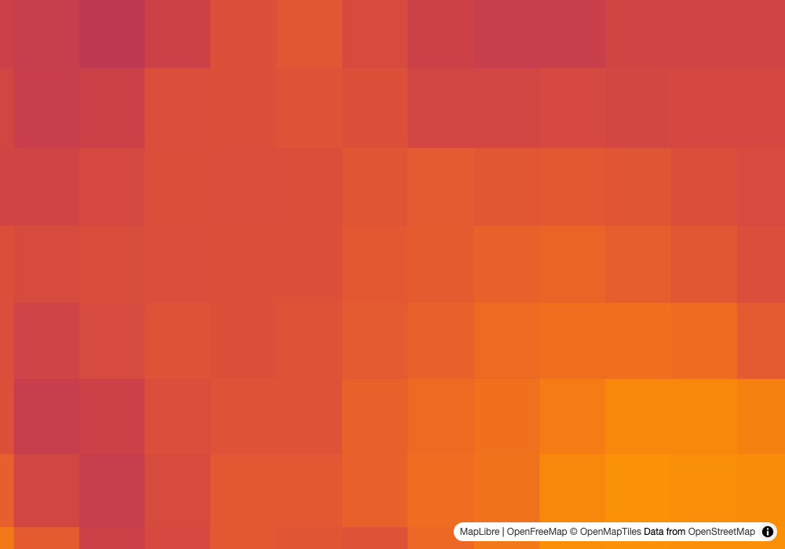
map: ERA5 temperature, 2023-01-10 frame, not the forecast ↗full read
Our read
Tomorrow afternoon (2026-10-26, 21:00 UTC, about 4 pm in Laredo) the HRRR model puts the air at 29.0 C over the fields, with cells ranging 28.4 to 29.8 C (converted from the returned kelvin by me, not tool output). That is level with the past week's daily highs (2026-10-18 to 10-24), which averaged 29.1 C (my own average, not tool output) across a 21.3 to 32.4 range. The two numbers are not quite like for like: the model figure is one hour's temperature, while the week figures are each day's peak (the same weather source lists 30.0 C as the daily high for 2026-10-26). The temperature map is an ERA5 frame from 2023-01-10 12:00 UTC, because that is the only store the tiler can draw; it shows the layer working, not today's heat.show the data
geocode("Laredo, Texas")
source: nominatim name: Laredo, Webb County, Texas, United States
lat: 27.5079211 lon: -99.5069834
bbox: [-99.7503109, 27.36649, -99.3310257, 27.7444122] [whole city; not used]
[fields box chosen by hand, 0.2 x 0.2 deg south of the city point: [-99.60698339999999, 27.2579211, -99.4069834, 27.4579211]]
compute_statistics("zarr", "noaa-hrrr-forecast", "TMP", bbox=fields, sel={"valid_time": "2026-10-26T21:00"})
TMP: min 301.55426025390625 max 302.92926025390625 mean 302.127920968192
median 302.05426025390625 std 0.3273496670657559 count 56
percentile_2 301.5605102539063 percentile_98 302.85426025390626
units: K sel: {"time": "2026-10-26 21:00:00"}
dataset: NOAA HRRR forecast, 2 m temperature (University of Utah): TMP (air temperature 2 m above ground), K
clipped_to: [-99.60698339999999, 27.2579211, -99.4069834, 27.4579211]
caveats: []
weather_summary(27.5079211, -99.5069834, past_days=7)
grid_cell: latitude 27.508808 longitude -99.50824 elevation 131.0
time 2026-10-18 .. 2026-10-31 (14 days: 7 past, today, 6 ahead)
temperature_2m_max C 21.3, 28.2, 30.8, 31.8, 27.6, 32.4, 31.5 | 30.2 (2026-10-25) | 30.0 (2026-10-26), 29.4, 32.2, 25.7, 27.5, 23.1
precipitation_sum mm 0.0 for 2026-10-18 to 2026-10-28, then 5.9, 0.7, 20.4
[temperature_2m_min, wind_speed_10m_max and wind_direction_10m_dominant omitted]
tile_url_template("zarr", "weatherbench2-era5", "2m_temperature", sel={"time": "2023-01-10T12:00"})
https://titiler.xyz/zarr/tiles/WebMercatorQuad/{z}/{x}/{y}.png?url=...1959-2023_01_10-6h-240x121_equiangular_with_poles_conservative.zarr&variable=2m_temperature&sel=time%3Dnearest%3A%3A2023-01-10T12%3A00&rescale=220%2C320&colormap_name=inferno
render_map("Laredo fields: ERA5 2 m temperature", bbox=fields, layers=[raster], stack_facts={"geocoded": "nominatim", "weather": True})
map_path: /tmp/ft12/out/map-laredo-fields--era5-2-m-temperature.html
Learning → The forecast store can be read but not drawn. HRRR answered the statistics call cleanly, but its
tiles flag is false, so the only temperature raster available for the map is ERA5, and ERA5 stops at 2023-01-10; the card's map is a January 2023 frame behind an October 2026 question. The HRRR reply also gives the valid time it used but not which 00/06/12/18z run it came from, and its caveats list was empty, so nothing in the output says how fresh the forecast is. And an ERA5 frame over a field-sized box is one flat colour: the store is a 0.25° grid, so the box asked about is about one cell; the map is drawn at state scale so the temperature field shows, with the subtitle saying so.Zarr store (HRRR statistics, clipped) · weather_summary past week · ERA5 tile_url_template raster layer · Stack panel with geocoded fact
2
sea surface
fisheries officer
Input
How warm is the sea surface off Monterey Bay this week compared with the same week last year?
Our read
Not computable from this store today.
Learning → Two reasons stacked, and the error names only one.
full read
Our read
Not computable from this store today. The tool refused the sea surface request outright (quoted in the block above), and even if it had run, the MUR record listed in describe_collection ends 2020-01-20, so it has nothing for this week (2026-10-25) or last year's. ERA5 offers only 2 m air temperature, not sea surface. A NOAA OISST collection exists on Planetary Computer, but I did not run it, so there is no Monterey Bay sea surface number here.show the data
geocode("Monterey Bay, California")
source: nominatim name: Monterey Bay, Monterey County, California, United States
bbox: [-122.0510668, 36.6499557, -121.75106679999999, 36.9499557]
bbox_note: geocoder returned a point, not an extent -- widened to a 0.3 deg box around it. Pass your own bbox if the subject is bigger
describe_collection("zarr", "nasa-mur-sst")
title: NASA MUR sea surface temperature, 1 km daily
url: s3://mur-sst/zarr-v1 region: us-west-2
variables: analysed_sst (analysed sea surface temperature, kelvin)
sel: time (daily, 2002-06-01 to 2020-01-20)
coverage: global ocean, 0.01 degrees
chunks: 5 days x 1799 x 3600 per chunk, about 123 MB: one cell costs a whole chunk
stats: false tiles: false
tiles_note: titiler.xyz is denied at this bucket, and a 123 MB chunk makes a tile read slow
source: NASA JPL MUR SST on AWS Open Data (metadata only here)
compute_statistics("zarr", "nasa-mur-sst", "analysed_sst", bbox=bay, sel={"time": "2026-10-20"})
{"error": "statistics are not offered for NASA MUR sea surface temperature, 1 km daily: 5 days x 1799 x 3600 per chunk, about 123 MB: one cell costs a whole chunk"}
describe_collection("zarr", "weatherbench2-era5")
variables: 2m_temperature (air temperature 2 m above ground, K) [the only variable listed]
sel: time (UTC, 6-hourly, ends 2023-01-10): history, not a forecast
stats: true tiles: true
search_datasets("sea surface temperature")
zarr nasa-mur-sst NASA MUR sea surface temperature, 1 km daily
veda sst-cyclone-beryl SPORT Sea Surface Temperature (K)
planetary-computer noaa-cdr-sea-surface-temperature-optimum-interpolation Sea Surface Temperature - Optimum Interpolation CDR
planetary-computer noaa-cdr-sea-surface-temperature-whoi ...
[further rows omitted, not read]
Learning → Two reasons stacked, and the error names only one. The refusal talks about chunk size (123 MB for a single cell), which sounds like a speed problem that a patient retry might beat. The bigger fact is in
describe_collection: the store ends 2020-01-20, so no amount of reading would give a 2026 answer. Read the sel line before trusting that a refusal is the only obstacle.Zarr store metadata-only branch (MUR) · tool refusal quoted as the card · describe_collection · search_datasets across catalogs
3
smoke
air quality lead
Input
Is wildfire smoke going to reach Boise in the next 24 hours?
Our read
No: HRRR guidance shows clear air over Boise, 0.1 ug/m3 at 2026-10-26 05:00 UTC and 0.0 ug/m3 at 2026-10-27 05:00 UTC from the 2026-10-26 00Z run, both under the 5 ug/m3 clear line.
Learning → The tool and the page disagree about who carries the smoke.
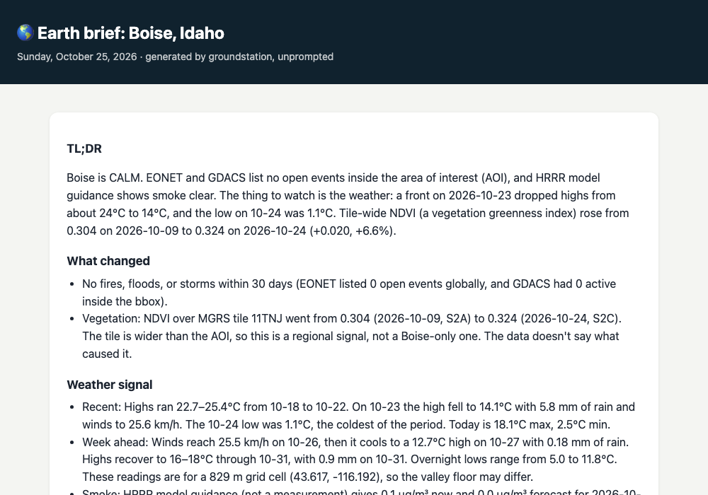
live artifact ↗full read
Our read
No: HRRR guidance shows clear air over Boise, 0.1 ug/m3 at 2026-10-26 05:00 UTC and 0.0 ug/m3 at 2026-10-27 05:00 UTC from the 2026-10-26 00Z run, both under the 5 ug/m3 clear line. The brief page agrees (TL;DR: CALM) and no fire or other event is listed within about 150 km. This is model guidance, not a measurement, and it gives two moments 24 hours apart, so a plume passing through in between would not show; the tool's own caveat says timing and edges can be off by hours and miles.show the data
geocode("Boise, Idaho")
source: nominatim name: Boise, Ada County, Idaho, United States lat 43.6166163 lon -116.200886
geocode_note: matched 'Boise, Idaho'; other places share it: Boise County, Idaho, United States. Pass a state or country if another was meant
smoke_forecast(43.6166163, -116.200886, 24)
run: 2026-10-26T00:00Z forecast_hour: 29
now_valid_time: 2026-10-26T05:00Z now_ugm3: 0.1
valid_time: 2026-10-27T05:00Z forecast_ugm3: 0.0
units: ug/m3 near-surface smoke mass density
source: NOAA HRRR, band MASSDEN (76), tiler https://raster.eoapi.dev, recipe https://github.com/hrodmn/smokehrrr
bounds: [-134.12, 21.12, -60.9, 52.62]
[tiles URL omitted, long]
caveat:
- this is model guidance from NOAA HRRR, not a measurement; a smoke plume's timing and edges can be off by hours and miles
- the model grid is 3 km, so a valley or a ridge can read differently from the cell value
- HRRR covers the contiguous US only
- approximate reading scale in ug/m3, not the AQI: under 5 clear, 5 to 35 light, 35 to 150 moderate, above 150 heavy
conditions_brief(place="Boise, Idaho")
signals: ["last rain >=1mm was 2 days ago", "peak wind today 16 km/h from the SE", "no active events within ~150 km"]
wind.tomorrow: wind_speed_max 25.5, from the SE (140 deg)
events: eonet [] (0 open events in 30 days); gdacs 0 active within 30 days inside the bbox
latest_look: S2C_11TNJ_20261024_0_L2A 2026-10-24 cloud 1.134022 covers_aoi_pct 100.0
[dryness, next_looks and the rest omitted; no smoke key anywhere in this return]
uv run briefing/brief.py --place "Boise, Idaho" --days 7 --out /tmp/ft12/r1/brief (38.9 s)
brief: brief-boise--idaho-2026-10-25.html map: brief-map-boise--idaho-2026-10-25.html (also .md and .data.json)
page states:
TL;DR: "Boise is CALM. EONET and GDACS list no open events inside the area of interest (AOI), and HRRR model guidance shows smoke clear."
Smoke: "HRRR model guidance (not a measurement) gives 0.1 ug/m3 now and 0.0 ug/m3 forecast for 2026-10-27 05:00Z. Both are in the "clear" range (under 5 ug/m3)."
Fresh eyes: "Sentinel-2 L2A, 2026-10-24 (S2C_11TNJ): 1.1% cloud and 100% AOI coverage."
map layers include: "HRRR smoke forecast, valid 2026-10-27T05:00Z"
Learning → The tool and the page disagree about who carries the smoke.
conditions_brief returned wind, events and a Sentinel-2 look but no smoke at all; the smoke numbers and the smoke map frame came only from the page script briefing/brief.py, which took about 39 s. And smoke_forecast returns two instants (now and +24 h), not a worst case across the day, so the question 'in the next 24 hours' is answered by endpoints only.smoke_forecast (HRRR MASSDEN) · smoke frame on the brief's map · brief page whose linked map carries the Stack panel · conditions_brief side by side
4
rain two years
hydrologist
Input
ERA5: how did total precipitation over the Sacramento Valley in October 2026 compare with October 2025?
Our read
Not computable from this ERA5 store.
Learning → Two traps in a row.
map: ERA5 temperature, January 2023 frame, not rain ↗
full read
Our read
Not computable from this ERA5 store. It has no precipitation variable (the tool lists only 2m_temperature), and its time axis ends 2023-01-10, so neither October 2026 nor October 2025 exists in it; asking for either snapped to 2023-01-10 18:00 UTC ("outside the store's range", off by 1373 and 1008 days). There is no rainfall comparison for the Sacramento Valley here, and the temperature figures the calls returned are for January 2023 and should not be read as October. The map is a labeled January 2023 temperature frame to show the layer, not an October 2026 rain picture.show the data
geocode("Sacramento Valley, California")
source: nominatim ambiguous: false
name: Sacramento Valley Station, 401, I Street, Downtown, Sacramento, Sacramento County, California, 95814, United States
bbox: [-121.6509879, 38.4350747, -121.35098789999999, 38.7350747]
geocode_note: matched 'Sacramento Valley, California'; other places share it: Sacramento Canyon, California, United States / Sacramento Valley National Cemetery, California, United States / California Place Apartments, California, United States. Pass a state or country if another was meant
bbox_note: geocoder returned a point, not an extent -- widened to a 0.3 deg box around it. Pass your own bbox if the subject is bigger
[candidates list shortened to the names above]
compute_statistics("zarr", "weatherbench2-era5", "total_precipitation", bbox=valley, sel={"time": "2026-10-15T12:00"})
{"error": "unknown variable 'total_precipitation'; options: 2m_temperature"}
compute_statistics("zarr", "weatherbench2-era5", "total_precipitation", bbox=valley, sel={"time": "2025-10-15T12:00"})
{"error": "unknown variable 'total_precipitation'; options: 2m_temperature"}
tile_url_template("zarr", "weatherbench2-era5", "total_precipitation", sel={"time": "2026-10-15T12:00"})
"unknown variable 'total_precipitation'; options: 2m_temperature"
[valley box then set by hand: [-122.4, 38.6, -121.4, 40.0]; the same call with the one variable the store has]
compute_statistics("zarr", "weatherbench2-era5", "2m_temperature", bbox=valley, sel={"time": "2026-10-15T12:00"})
2m_temperature: min 282.80999755859375 max 282.80999755859375 mean 282.80999755859375 median 282.80999755859375 std 0.0 count 1
units: K sel: {"time": "2023-01-10 18:00:00"}
caveats:
- time 2026-10-15T12:00 snapped to 2023-01-10 18:00:00, off by 1373 days 18:00:00 (outside the store's range)
- coarse grid: only 1 cell(s) (cell size 1.5 deg) fall in the bbox, so min/max/mean are close to one model value, not a local average
compute_statistics(... "2m_temperature" ..., sel={"time": "2025-10-15T12:00"})
same values; sel: {"time": "2023-01-10 18:00:00"}
caveats: time 2025-10-15T12:00 snapped to 2023-01-10 18:00:00, off by 1008 days 18:00:00 (outside the store's range) [coarse-grid caveat repeated, omitted]
tile_url_template("zarr", "weatherbench2-era5", "2m_temperature", sel={"time": "2026-10-15T12:00"})
https://titiler.xyz/zarr/tiles/WebMercatorQuad/{z}/{x}/{y}.png?url=...zarr&variable=2m_temperature&sel=time%3Dnearest%3A%3A2026-10-15T12%3A00&rescale=220%2C320&colormap_name=inferno
render_map(... subtitle="Asked for 2026-10-15 12Z; the store has nothing after 2023-01-10")
map_path: /tmp/ft12/out/map-sacramento-valley--era5-2-m-temperature--last-frame-in-the-s.html
Learning → Two traps in a row. First, "Sacramento Valley" geocoded to Sacramento Valley Station, a train station downtown, widened to a 0.3 degree box; the geocode_note names it but a hasty reader would take the box for the valley, so I set a valley-sized box by hand. Second,
tile_url_template accepted a 2026 time with no warning, while compute_statistics snaps loudly with a caveat; the tiler's "nearest" should land on the last frame, but I did not load the tiles to confirm that. And an ERA5 frame over a field-sized box is one flat colour: the store is a 0.25° grid, so the box asked about is about one cell; the map is drawn at state scale so the temperature field shows, with the subtitle saying so.Zarr store caveats (snapped time, coarse grid) · unknown-variable error listing options · ERA5 tile template · Stack panel
5
snow 3d
ski resort operations
Input
Is there snow on the upper mountain at Mt Bachelor yet, and what does the model say for the next 2 days?
Our read
Mostly bare on the upper mountain as of the clear Sentinel-2 look on 2026-10-23 (0.02% cloud): the snow index over the summit box averaged -0.32 (median -0.33), with only the top 2% of…
Learning → The 3D drape missed a slice of the view until a sibling tile was added.
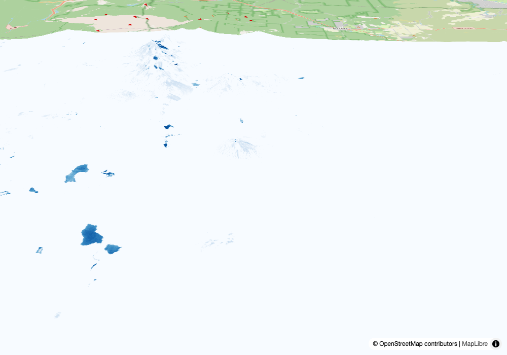
live artifact ↗full read
Our read
Mostly bare on the upper mountain as of the clear Sentinel-2 look on 2026-10-23 (0.02% cloud): the snow index over the summit box averaged -0.32 (median -0.33), with only the top 2% of pixels above 0.10, though a few bright patches reach 0.84. The model (HRRR, one 3 km cell) holds the air below freezing: about -2.8 C at 21:00 UTC on 2026-10-26, -2.6 C at 09:00 UTC and -2.2 C at 21:00 UTC on 2026-10-27 (my conversion from kelvin, not tool output). That store carries temperature only, so it says nothing about snowfall; and the index was computed on raw band values (the scale and offset are passed through, not applied), so read it as direction, not as a snow-cover percentage.show the data
geocode("Mount Bachelor, Oregon")
source: nominatim name: Mount Bachelor, Deschutes County, Oregon, United States lat 43.9793848 lon -121.6885078
bbox_note: geocoder returned a point, not an extent -- widened to a 0.3 deg box around it. Pass your own bbox if the subject is bigger
[upper-mountain box set by hand around the summit point: [-121.70, 43.96, -121.67, 43.99]]
search_imagery("earth-search", ["sentinel-2-l2a"], bbox=upper, datetime_range="2026-10-01T00:00:00Z/2026-10-26T00:00:00Z", max_cloud_cover=30, limit=5)
S2C_10TEP_20261023_0_L2A 2026-10-23 cloud 8.323914 covers_aoi_pct 100.0
S2C_10TFP_20261023_0_L2A 2026-10-23 cloud 0.020296 covers_aoi_pct 100.0
S2B_10TEP_20261018_0_L2A 2026-10-18 cloud 1.112594 covers_aoi_pct 100.0
S2B_10TFP_20261018_0_L2A 2026-10-18 cloud 5.032135 covers_aoi_pct 100.0
S2A_10TEP_20261015_1_L2A 2026-10-15 cloud 0.094147 covers_aoi_pct 100.0
recommended: S2C_10TFP_20261023_0_L2A -- clearest (0.0% cloud) and best-covering (100.0% of the area), not a tradeoff
compute_statistics("earth-search", "sentinel-2-l2a", "S2C_10TFP_20261023_0_L2A", expression="(green-swir16)/(green+swir16)", bbox=upper)
b1: min -0.9984139571768438 max 0.8446395317903698 mean -0.3198622771102794 median -0.3258897418004187
std 0.21667131235292447 count 77701.5625 valid_percent 100.0
percentile_2 -0.7268128161888702 percentile_98 0.10416666666666667
clipped_to: [-121.7, 43.96, -121.67, 43.99]
[band_scaling (28 entries, 0.0001 and offset -0.1 on the reflectance bands, passed through and not applied, so the index is on raw values), plus sum, majority, minority, unique, description omitted]
compute_statistics("zarr", "noaa-hrrr-forecast", "TMP", bbox=upper, sel={"valid_time": ...})
2026-10-26 21:00:00 mean 270.30426025390625 K count 1
2026-10-27 09:00:00 mean 270.5046081542969 K count 1
2026-10-27 21:00:00 mean 270.9612731933594 K count 1
caveats (each): coarse grid: only 1 cell(s) (cell size 3000) fall in the bbox, so min/max/mean are close to one model value, not a local average
[min/max/median/std/percentiles equal the mean; omitted]
render_map_3d("Mt Bachelor: snow index (NDSI) on terrain, 2026-10-23", bbox=[-121.80, 43.90, -121.55, 44.05], layer=S2C_10TFP expression, extra_layers=[S2C_10TEP], exaggeration=1.5, stack_facts={"geocoded": "nominatim"})
path: /tmp/ft12/out/map3d-mt-bachelor--snow-index--ndsi--on-terrain--2026-10-23.html
coverage_note: the drape covers 87% of the view on load, the rest is terrain with no imagery until someone clicks Load full coverage, which takes it to 100%
[first render without extra_layers said: "the drape covers 87% of the view, the rest renders as terrain with no imagery. Pass the rest of a same-day full_coverage_set as extra_layers"]
Learning → The 3D drape missed a slice of the view until a sibling tile was added. The clearest scene (tile 10TFP) does not reach the west edge of my view, so that edge had no imagery and the tool reported 87% coverage; the same-day neighbor 10TEP covers it, but only as
extra_layers behind a click, so on load the page still opens at 87%. Also, a 0.03 degree summit box holds one HRRR cell, so the 'upper mountain' forecast is the single cell's temperature, which may not match the summit.clipped compute_statistics with an NDSI expression · render_map_3d draped with an index layer and extra_layers · HRRR forecast statistics · Stack panel with terrain
Round 2 — change and events
6
lava
rancher
Input
Any new lava flows near Kilauea this month?
Our read
I can't tell you from this whether there are new lava flows: the SWIR index over the Kilauea box moved from -0.30 on 2026-09-28 to -0.27 on 2026-10-18, a delta of +0.04, but the 2026-10-18…
Learning → The volcano was candidate 2, but as a box 0.0001 degrees wide.
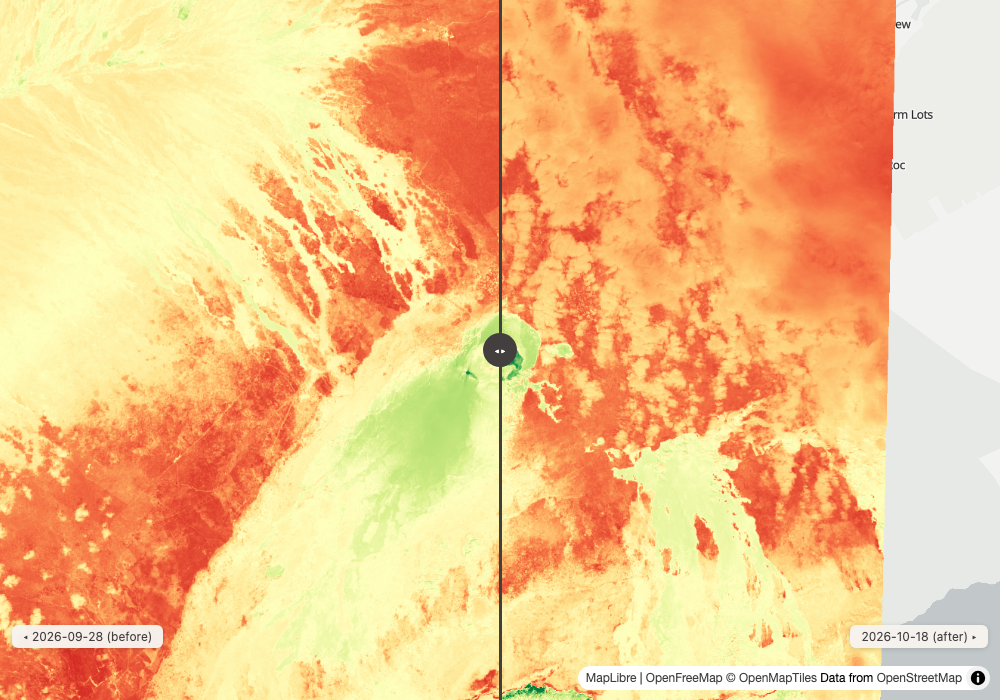
live artifact ↗full read
Our read
I can't tell you from this whether there are new lava flows: the SWIR index over the Kilauea box moved from -0.30 on 2026-09-28 to -0.27 on 2026-10-18, a delta of +0.04, but the 2026-10-18 scene is 36% cloud. The name "Kilauea, Hawaii" was refused as ambiguous (a town on Kauaʻi or a point in Hawaiʻi County), so I passed the volcano's own box from "Kilauea volcano, Hawaii". The tool's caveat applies: "cloud may be driving this delta (after scene 36%, threshold 20%). Cloud pushes a normalized index toward zero." The figure is a mean over the whole box (clipped_to above), not a lava map, so open the swipe and look at the summit and rift area on 2026-09-28 against 2026-10-18.show the data
geocode("Kilauea, Hawaii")
source: nominatim name: Kilauea, Kauaʻi County, Hawaii, 96754, United States
bbox: [-159.422598, 22.1961855, -159.392682, 22.22117]
ambiguous: true
candidates:
1. Kilauea, Kauaʻi County, Hawaii, 96754, United States bbox [-159.422598, 22.1961855, -159.392682, 22.22117] source nominatim
2. Kīlauea, Hawaiʻi County, Hawaii, 96718, United States bbox [-155.275861, 19.4138147, -155.275761, 19.4139147] source nominatim
geocode_note: matched 'Kilauea, Hawaii'; other places share it: Kīlauea, Hawaii, United States. Pass a state or country if another was meant. ambiguous: pass the fuller name or a bbox
compare_dates(place="Kilauea, Hawaii", window_before="2026-09-01T00:00:00Z/2026-09-30T23:59:59Z",
window_after="2026-10-01T00:00:00Z/2026-10-25T23:59:59Z", expression="(swir22-nir)/(swir22+nir)")
error: 'Kilauea, Hawaii' matches more than one place; pass a fuller name or a bbox
[candidates and geocode_note repeated from the geocode call, omitted here]
geocode("Kilauea volcano, Hawaii")
source: nominatim name: Kīlauea, Hawaiʻi County, Hawaii, 96718, United States
bbox: [-155.425811, 19.263864700000003, -155.125811, 19.5638647]
[no ambiguous flag; no geocode_note]
compare_dates(bbox=[-155.425811, 19.2638647, -155.125811, 19.5638647],
window_before="2026-09-01T00:00:00Z/2026-09-30T23:59:59Z",
window_after="2026-10-01T00:00:00Z/2026-10-25T23:59:59Z",
expression="(swir22-nir)/(swir22+nir)", max_cloud_cover=40, label="Kilauea volcano")
tile: 4QHG
after: S2B_4QHG_20261018_0_L2A 2026-10-18 cloud 35.941234 mean -0.2689
before: S2B_4QHG_20260928_0_L2A 2026-09-28 cloud 6.979185 mean -0.3046
delta: 0.0357 delta_pct: 11.7
clipped_to: [-155.425811, 19.2638647, -155.125811, 19.5638647]
caveat: ["cloud may be driving this delta (after scene 36%, threshold 20%). Cloud pushes a normalized index toward zero."]
map_path: /tmp/ft12/out/map-kilauea-volcano---2026-10-18-vs-2026-09-28.html
Learning → The volcano was candidate 2, but as a box 0.0001 degrees wide. The geocoder refused to guess, as intended, but the two choices it offered were Kilauea on Kauaʻi and a Hawaiʻi County point whose box is 0.0001 degrees wide (about 11 m, my arithmetic), so picking candidate 2 would have clipped a few pixels. Typing "Kilauea volcano, Hawaii" returned the same point widened to a plain 0.3 degree square, which is the box I used. I also ran with max_cloud_cover 40 because a tropical volcano rarely gives anything clearer; the cost was a 36% scene and the caveat above.
ambiguous geocode with candidates · compare_dates refusing an ambiguous place · clipped_to · cloud caveat · SWIR expression · swipe map
7
reservoir
water district
Input
How much has Lake Shasta's surface shrunk since spring?
Our read
Slightly less water in the reservoir box, but this index can't give you a shrinkage number: over a box I drew around the reservoir the NDWI mean went from -0.47 on 2026-05-15 to -0.49 on…
Learning → The place name gave the town, not the lake, and the sign flipped.
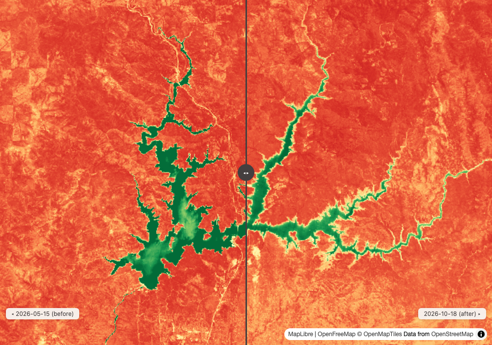
live artifact ↗full read
Our read
Slightly less water in the reservoir box, but this index can't give you a shrinkage number: over a box I drew around the reservoir the NDWI mean went from -0.47 on 2026-05-15 to -0.49 on 2026-10-18 (delta -0.02), and water scores high on this index. Both scenes are clear (cloud 0.05% and 0.0002%) and from the same tile, 10TEL. It gives direction, not acres or feet: the box includes shoreline and hills, and the number is a mean over every pixel in it. The name "Shasta Lake, California" resolved to the town of Shasta Lake, and over that box the sign is the opposite (+0.05), so the box you choose decides the answer.show the data
geocode("Shasta Lake, California")
source: nominatim name: Shasta Lake, Shasta County, California, United States
bbox: [-122.411328, 40.650921, -122.336985, 40.709755]
[no ambiguous flag; one candidate]
compare_dates(place="Shasta Lake, California",
window_before="2026-05-01T00:00:00Z/2026-05-31T23:59:59Z",
window_after="2026-10-01T00:00:00Z/2026-10-25T23:59:59Z",
expression="(green-nir)/(green+nir)", max_cloud_cover=20)
tile: 10TEL
after: S2B_10TEL_20261018_0_L2A 2026-10-18 cloud 0.000182 mean -0.5414
before: S2A_10TEL_20260515_0_L2A 2026-05-15 cloud 0.054803 mean -0.5907
delta: 0.0493 delta_pct: 8.3
clipped_to: [-122.411328, 40.650921, -122.336985, 40.709755]
[map_path omitted: /tmp/ft12/out/map-shasta-lake--california---2026-10-18-vs-2026-05-15.html]
compare_dates(bbox=[-122.45, 40.67, -122.17, 40.95], label="Lake Shasta reservoir",
window_before="2026-05-01T00:00:00Z/2026-05-31T23:59:59Z",
window_after="2026-10-01T00:00:00Z/2026-10-25T23:59:59Z",
expression="(green-nir)/(green+nir)", max_cloud_cover=20)
tile: 10TEL
after: S2B_10TEL_20261018_0_L2A 2026-10-18 cloud 0.000182 mean -0.4894
before: S2A_10TEL_20260515_0_L2A 2026-05-15 cloud 0.054803 mean -0.4695
delta: -0.0199 delta_pct: -4.2
clipped_to: [-122.45, 40.67, -122.17, 40.95]
map_path: /tmp/ft12/out/map-lake-shasta-reservoir---2026-10-18-vs-2026-05-15.html
[no caveat key on either call]
Learning → The place name gave the town, not the lake, and the sign flipped. geocode("Shasta Lake, California") returned a 0.07 by 0.06 degree city box with no ambiguity flag, and compare_dates over it reported NDWI up 0.05; the same call over a box I drew by eye around the reservoir ([-122.45, 40.67, -122.17, 40.95], not checked against a shoreline) reported it down 0.02. clipped_to printed the box both times, which is what exposed it, but nothing warned that a city box was standing in for a lake.
clipped_to on compare_dates · NDWI expression · same-tile scene matching · place-versus-bbox sensitivity · swipe map
8
flood events
county emergency manager
Input
Any active flooding events in Harris County?
Our read
No active flooding events are listed for Harris County, Texas over the past 30 days: EONET listed 0 open events and GDACS 0 active inside the county box.
Learning → The two candidates have the same name and differ only in a coordinate.
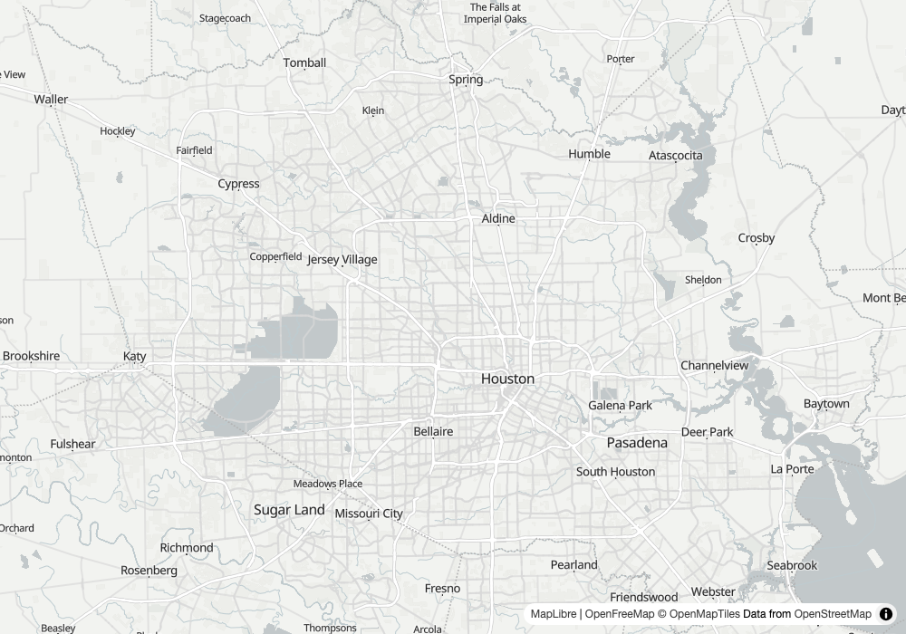
live artifact ↗full read
Our read
No active flooding events are listed for Harris County, Texas over the past 30 days: EONET listed 0 open events and GDACS 0 active inside the county box. Widening the box by 1 degree turns up one event, a prescribed fire in Polk County dated 2026-10-16, which is not a flood. "Harris County" alone was flagged ambiguous (a Texas county at 29.8N 95.4W or one at 32.7N 84.9W), so I used "Harris County, Texas". Two feeds with nothing in them means nothing is logged there, not that nothing is flooding: local flash-flood reports are not in EONET or GDACS, so use the National Weather Service for those.show the data
geocode("Harris County")
source: gazet name: Harris County (US, county)
bbox: [-95.96084594726562, 29.49733543395996, -94.90847778320312, 30.170696258544922]
ambiguous: true
candidates:
1. Harris County (US, county) where: at 29.8N 95.4W bbox [-95.96084594726562, 29.49733543395996, -94.90847778320312, 30.170696258544922] source gazet
2. Harris County (US, county) where: at 32.7N 84.9W bbox [-85.18423461914062, 32.583126068115234, -84.68286895751953, 32.87248992919922] source gazet
geocode_note: 2 places match 'Harris County' equally well; using Harris County (US, county) at 29.8N 95.4W, not Harris County (US, county) at 32.7N 84.9W. Pass the fuller name if another was meant. ambiguous: pass the fuller name or a bbox
geocode("Harris County, Texas")
source: nominatim name: Harris County, Texas, United States
bbox: [-95.9608455, 29.497339, -94.9084924, 30.1706958]
[no ambiguous flag]
active_events(bbox=[-95.96084594726562, 29.49733543395996, -94.90847778320312, 30.170696258544922], days=30)
eonet: [] gdacs: []
eonet_note: EONET listed 0 open events in 30 days
gdacs_note: GDACS current-events feed listed 100; 0 active within 30 days inside the bbox
active_events(same bbox, days=30, pad=1.0)
eonet: 1
Prescribed Fire Rx Polk 9275, Polk, Texas category Wildfires date 2026-10-16T08:31:00Z coordinates [-94.72916667, 30.57111111]
gdacs: []
eonet_note: EONET listed 1 open events in 30 days
gdacs_note: GDACS current-events feed listed 100; 0 active within 30 days inside the bbox
render_map(title="Harris County, Texas: open natural events, 30 days", layers=[geojson "EONET events (bbox padded 1 degree)", 1 point], stack_facts={"geocoded": "nominatim", "events": True})
map_path: /tmp/ft12/out/map-harris-county--texas--open-natural-events--30-days.html
coverage_note: no imagery layer on this map, so it renders as vectors on a blank background. Add a scene, or say plainly that none is available for this area
[state echo (bbox, compare false, layer list) omitted]
Learning → The two candidates have the same name and differ only in a coordinate. Both Harris County rows read "Harris County (US, county)"; the caller has to tell them apart from the "where" text (29.8N 95.4W against 32.7N 84.9W) and know which is Texas. The fuller name "Harris County, Texas" then answered through nominatim, not gazet, with the same bbox to within 0.00002 degrees. The events map is also an honest empty: with no events inside the county there is only the padded Polk point on a blank background, and I did not add imagery because I found no single Sentinel-2 scene covering the county (that search is not in the block above).
ambiguous geocode with candidates · active_events with and without pad · events layer · Stack panel facts (geocoded, events) · empty-result honesty
9
burn scar 3d
forester
Input
Show me the Flat Fire burn scar in 3D
Our read
EONET has no Flat Fire in Oregon, so I draped the largest named Oregon wildfire from the last 90 days, MUSTANG in Malheur County (13,379 acres, last EONET update 2026-08-25).
Learning → active_events cannot rank fires, so "the largest" took a second source.
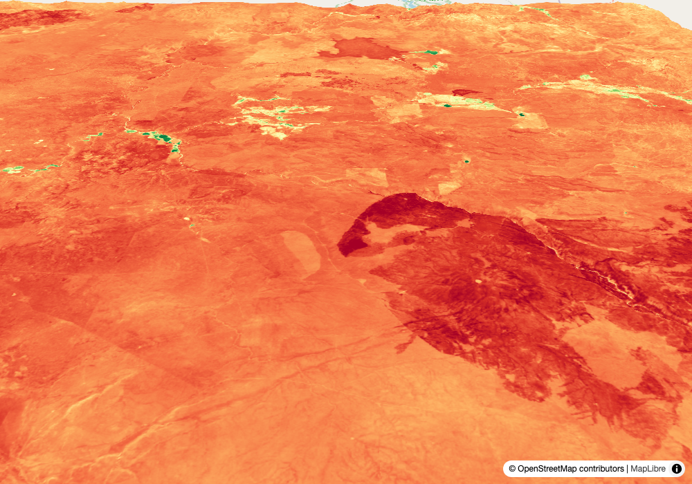
live artifact ↗full read
Our read
EONET has no Flat Fire in Oregon, so I draped the largest named Oregon wildfire from the last 90 days, MUSTANG in Malheur County (13,379 acres, last EONET update 2026-08-25). The 3D view uses the Sentinel-2 scene from 2026-10-07 (cloud 0.06%, covers the whole box), coloured by a burn index where low values mean burned ground; the box mean is -0.18 and the 2nd to 98th percentile range is -0.38 to -0.06. The one near-name match, Second Flat in Harney County (76,958 acres), was last updated 2026-07-24, outside the 90 days. Caveats: this is one date with no pre-fire scene, the tool computed the index on raw values without applying the scene's offset, and the burn colouring is not calibrated, so read the picture, not the mean.show the data
active_events(bbox=[-124.6, 41.9, -116.4, 46.3], days=90) [Oregon box; 3 of 18 rows shown]
eonet_note: EONET listed 18 open events in 90 days
gdacs_note: GDACS current-events feed listed 100; 0 active within 90 days inside the bbox
Wildfire MUSTANG, Malheur, Oregon Wildfires 2026-08-25T16:04:00Z [-117.442833, 42.667167]
Wildfire Ruggs, Morrow, Oregon Wildfires 2026-08-31T15:38:00Z [-119.69069, 45.253405]
Wildfire McCulley, Baker, Oregon Wildfires 2026-08-22T18:38:00Z [-118.280776, 44.827902]
[15 other rows omitted: prescribed fires, Washington and Idaho fires, other Oregon fires; none named Flat]
[no acreage field in any row]
EONET direct (status=all, days=400, wildfires, Oregon box): 143 events, names containing "flat":
Wildfire Second Flat, Harney, Oregon last date 2026-07-24T20:07:00Z 76,958 acres [-119.439167, 43.608667]
Wildfire Horse Flat, Washington, Idaho last date 2026-07-13T20:43:00Z [Idaho, outside Oregon]
[no "Flat Fire"]
EONET direct (status=all, days=90, wildfires, Oregon box), largest by magnitudeValue:
Wildfire MUSTANG, Malheur, Oregon 13,379 acres last date 2026-08-25T16:04:00Z EONET_23456 [-117.442833, 42.667167]
[rows above it: Colwash (Yakima, Washington) 38,599 acres, outside Oregon]
search_imagery("earth-search", ["sentinel-2-l2a"], bbox=[-117.56, 42.55, -117.32, 42.78], datetime_range="2026-08-01T00:00:00Z/2026-10-25T23:59:59Z", max_cloud_cover=20, limit=10)
S2A_11TMH_20261009_1_L2A 2026-10-09 cloud 4.926 covers_aoi_pct 100.0
S2C_11TMH_20261007_0_L2A 2026-10-07 cloud 0.056 covers_aoi_pct 100.0
S2B_11TMH_20260922_0_L2A 2026-09-22 cloud 4.184 covers_aoi_pct 100.0
[7 older rows omitted]
recommended: S2A_11TMH_20261009_1_L2A, "4.9% cloud, covers 100.0% of the area, and newest of 9 near-equal scenes; the clearest (0.0% cloud) is from 2026-08-10"
render_map_3d(title="MUSTANG fire, Malheur County, Oregon: burn index in 3D", bbox=[-117.56, 42.55, -117.32, 42.78],
layer={item S2C_11TMH_20261007_0_L2A, assets nir+swir22, expression "(nir-swir22)/(nir+swir22)", rescale "-0.4,0.8", colormap rdylgn})
path: /tmp/ft12/out/map3d-mustang-fire--malheur-county--oregon--burn-index-in-3d.html
terrain: true exaggeration 1.5 coverage_pct: 100.0
compute_statistics(earth-search, sentinel-2-l2a, S2C_11TMH_20261007_0_L2A, expression="(nir-swir22)/(nir+swir22)", bbox=[-117.56, 42.55, -117.32, 42.78])
b1: min -0.8122743682310469 max 0.4316644113667118 mean -0.17967865089908563 median -0.15737137916126243 std 0.08075738763225114
percentile_2 -0.3845419847328244 percentile_98 -0.0609067912045145 count 251189.34375 valid_percent 100.0
clipped_to: [-117.56, 42.55, -117.32, 42.78]
[band_scaling omitted: the item's scale/offset list, 0.0001 and offset -0.1 on the reflectance bands, which the tool passes through and does not apply, so the index is computed on raw values]
Learning → active_events cannot rank fires, so "the largest" took a second source. The 90-day call returned 18 rows with title, date and coordinates but no acreage, and the rule I was given (pick the largest) needs one. I had to query EONET directly for magnitudeValue, which is not a groundstation tool. That same query also showed the call's
status: open filter hides closed fires, and that the only Flat in Oregon in 400 days is Second Flat, last updated 2026-07-24. The index stats also come back on raw values (the offset -0.1 is not applied), so the -0.18 mean is a relative number only.active_events to find a named fire · search_imagery recommended/coverage fields · render_map_3d drape with a burn index · clipped compute_statistics
10
port radar
port analyst
Input
Compare Rotterdam port activity on radar between last month and now
Our read
The radar picture is a little brighter over the Rotterdam port box on 2026-10-24 than on 2026-09-30: VV mean 269 against 241 (median 204 against 197), both from the same Sentinel-1 orbit…
Learning → Radar brightness needed its stretch chosen by hand.
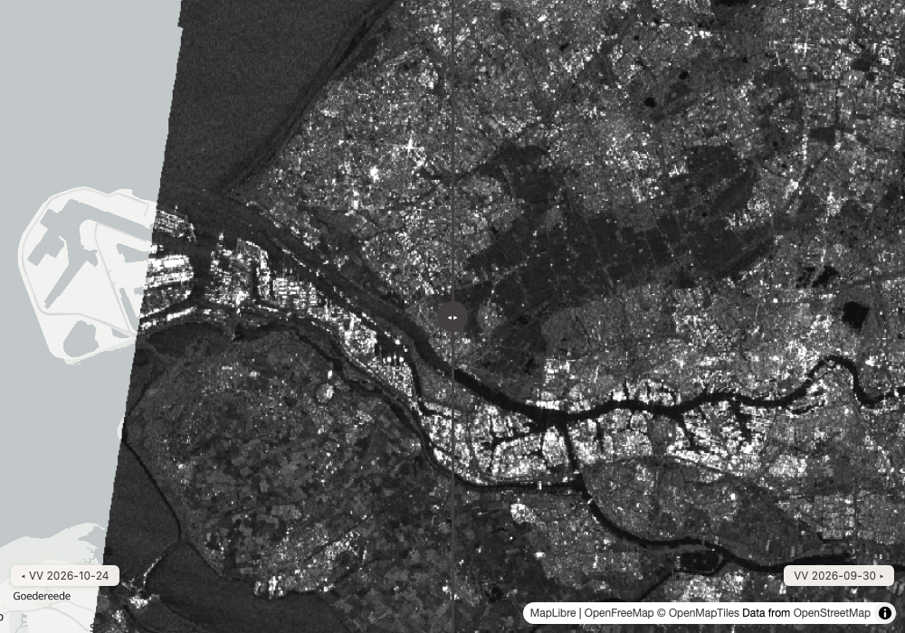
live artifact ↗full read
Our read
The radar picture is a little brighter over the Rotterdam port box on 2026-10-24 than on 2026-09-30: VV mean 269 against 241 (median 204 against 197), both from the same Sentinel-1 orbit (descending, 05:49 UTC) so the viewing geometry matches. That is a brightness difference, not an activity count. The numbers are raw amplitude values for a hand-drawn box that is mostly water and land, not calibrated backscatter, and they include wind and sea-state effects.show the data
geocode("Port of Rotterdam")
source: nominatim name: Port of Rotterdam, Lekstraat, Mathenesse, Nieuw-Mathenesse, Delfshaven, Rotterdam, Zuid-Holland, Nederland, 3029 BN, Nederland
bbox: [4.2798268, 51.754333, 4.5798268, 52.054333]
geocode_note: matched 'Port of Rotterdam'; other places share it: Port of Rotterdam, 3072 AP, Nederland / Port of Rotterdam, 3072 AR, Nederland / Port of Rotterdam, 3072 AD, Nederland. Pass a state or country if another was meant
[not used: a 0.3 degree square around one street address, which misses Europoort and Maasvlakte; I used a box I chose by hand]
search_imagery("earth-search", ["sentinel-1-grd"], bbox=[3.95, 51.87, 4.55, 52.0], datetime_range="2026-09-01T00:00:00Z/2026-09-30T23:59:59Z", limit=8)
S1D_IW_GRDH_1SDV_20260930T054946_20260930T055011_004803_009031 2026-09-30 descending covers_aoi_pct 100.0 assets vv, vh
S1C_IW_GRDH_1SDV_20260929T055745_20260929T055810_009658_01339C 2026-09-29 descending covers_aoi_pct 100.0
[6 older rows omitted, all 100.0]
recommended: S1D_IW_GRDH_1SDV_20260930T054946_20260930T055011_004803_009031, "best-covering scene at 100.0% of the area; this collection reports no cloud cover"
search_imagery("earth-search", ["sentinel-1-grd"], same bbox, datetime_range="2026-10-01T00:00:00Z/2026-10-25T23:59:59Z", limit=8)
S1D_IW_GRDH_1SDV_20261024T054946_20261024T055011_005153_009C4E 2026-10-24 descending covers_aoi_pct 100.0 assets vv, vh
[7 older rows omitted, all 100.0]
recommended: S1D_IW_GRDH_1SDV_20261024T054946_20261024T055011_005153_009C4E, "best-covering scene at 100.0% of the area; this collection reports no cloud cover"
compute_statistics(earth-search, sentinel-1-grd, S1D_..._20260930T054946_..._004803_009031, assets=["vv"], bbox=[3.95, 51.87, 4.55, 52.0])
vv: min 40.0 max 7218.0 mean 241.17234802246094 median 197.0 std 202.66589977859823 percentile_2 62.0 percentile_98 795.0 valid_percent 84.48
compute_statistics(earth-search, sentinel-1-grd, S1D_..._20261024T054946_..._005153_009C4E, assets=["vv"], bbox=[3.95, 51.87, 4.55, 52.0])
vv: min 47.0 max 8999.0 mean 268.6274719238281 median 204.0 std 243.92934892747348 percentile_2 98.0 percentile_98 932.0 valid_percent 84.67
[clipped_to and count omitted from both]
render_map(title="Rotterdam port on radar: 2026-09-30 vs 2026-10-24 (VV)", bbox=[3.95, 51.87, 4.55, 52.0],
layers=[item VV 2026-09-30, item VV 2026-10-24; assets vv, rescale "0,800", colormap gray], compare=True)
map_path: /tmp/ft12/out/map-rotterdam-port-on-radar--2026-09-30-vs-2026-10-24--vv.html
compare: true coverage_pct: 100.0
Learning → Radar brightness needed its stretch chosen by hand. The VV asset is raw amplitude (values up to 9,000), so there was no obvious rescale; I ran compute_statistics on both scenes first and used 0,800 because the 98th percentiles were 795 and 932. The geocode for "Port of Rotterdam" was also no use: a 0.3 degree square around a street address in Mathenesse, so I drew the port box myself. Nothing in the tools turns this into ship or container counts.
search_imagery on sentinel-1-grd · same-orbit scene pairing · SAR VV compare swipe · raw amplitude stats
Round 3 — discovery and offline
11
datasets
researcher
Input
Which open datasets cover night lights for Lagos at better than 1 km?
Our read
Black Marble does not cover Lagos, though the catalog says it does.
Learning → covers_aoi=True is the envelope, not the pixels.
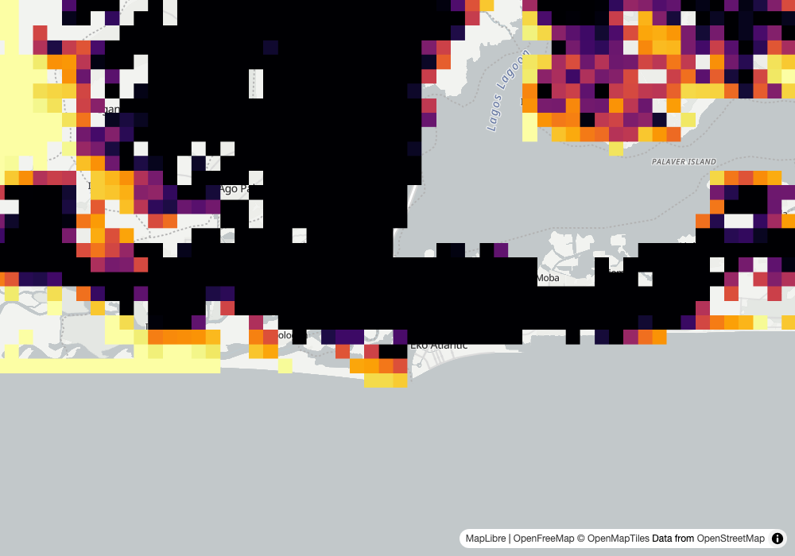
live artifact ↗full read
Our read
Black Marble does not cover Lagos, though the catalog says it does. VEDA's nightlights-hd-monthly came back with covers_aoi=True, but a search for its items over Lagos returned 0, because its extent is one envelope around other cities' scenes (25 per month in the items read, Venice to Auckland, 2019 to 2022-03). What does cover Lagos is the GRDI VIIRS night-lights raster, one annual composite for 2020, drawn on the map; no search hit declares a resolution, so "better than 1 km" is unconfirmed, and the pixel count over the 0.32 degree Lagos box (about 35 km, my arithmetic) suggests about 1 km, which I did not verify. Caveats: the tool says gsd is null and "resolution unknown (not necessarily coarse)"; the raster is an input to a deprivation index and not the Black Marble product; there is no 2026 or monthly night-lights layer for Lagos in these catalogs.show the data
search_datasets("nightlights", place="Lagos, Nigeria", max_gsd=1000)
1 hit
veda nightlights-hd-monthly Black Marble High Definition Nightlights Monthly Dataset gsd=None covers_aoi=True
note: no gsd declared, resolution unknown (not necessarily coarse)
search_datasets("black marble", place="Lagos, Nigeria", max_gsd=1000)
1 hit, the same one
search_datasets("night lights", place="Lagos, Nigeria", max_gsd=1000)
3 hits, all veda, all gsd=None, all covers_aoi=True, all with the same "no gsd declared" note
grdi-vnl-raster GRDI VNL Constituent Raster
grdi-vnl-slope-raster GRDI VNL Slope Constituent Raster
nightlights-hd-monthly
[summary text omitted from each hit]
Does the collection really have pixels over Lagos? (bbox from geocode: [3.2341795, 6.2950575, 3.5541795, 6.6150575], source=nominatim)
describe_collection("veda", "nightlights-hd-monthly")
extent.spatial.bbox: [[-122.63569641113281, -37.08, 174.96, 54.584515]] temporal: 2019-01-01 to 2022-03-31
search_imagery("veda", ["nightlights-hd-monthly"], place="Lagos, Nigeria", limit=5)
count: 0 items: []
search_imagery("veda", ["nightlights-hd-monthly"], bbox=[-180,-90,180,90], limit=50)
count: 50, every id finalBMHD_Scaled_, 25 cities per month (Venice, Tokyo-23Wards, Singapore, Rome, Paris, Osaka, Milan, Marseille, Madrid, London, Lima, Kyoto, Sapporo, Hamburg, Ghent, Genoa, Gdynia, Fukuoka, Dunkirk, Dhaka, Colombo, Beijing, Barcelona, Auckland, Amsterdam, Nagoya); no Lagos
[only the first 50 items read, 2022-03 and 2022-02]
search_imagery("veda", ["grdi-vnl-raster"], place="Lagos, Nigeria", limit=5)
count: 1
povmap-grdi-v1_VNL_2020-01-01_2020-12-31 2020-01-01 covers 100.0 bbox [-179.99999999990004, -55.983333333466476, 179.81666666676645, 82.18333333320012]
compute_statistics("veda", "grdi-vnl-raster", "povmap-grdi-v1_VNL_2020-01-01_2020-12-31", bbox=, assets=["cog_default"])
cog_default_b1: min -0.0 max 85.53557586669922 mean 10.729715389986776 std 21.289938697996746 percentile_98 74.34770202636719
count: 698.0 valid_percent: 45.89
render_map("Lagos, GRDI VIIRS night lights (2020 annual)", bbox=, [item layer: veda / grdi-vnl-raster / povmap-grdi-v1_VNL_2020-01-01_2020-12-31, assets ["cog_default"], rescale "0,75", colormap_name "inferno"], stack_facts={"geocoded": "nominatim"})
/tmp/ft12/out/map-lagos--grdi-viirs-night-lights--2020-annual.html layers: ['GRDI VNL night lights, 2020']
[one tile fetched at z=11 over Lagos Island: HTTP 200, PNG with partial transparency; the whole map was not looked at in a browser]
Learning → covers_aoi=True is the envelope, not the pixels. The Black Marble HD monthly collection passed the Lagos filter and then held no Lagos item: its declared box is a union of 25 city scenes. The tool's docstring says as much, but the flag reads as a yes. Every hit also has gsd=None, so the max_gsd=1000 filter kept things it could not check, and the only way to find the real Lagos layer was a second search_imagery per hit.
federated search_datasets with place and max_gsd filters · covers_aoi and gsd=None flags · describe_collection extent versus search_imagery items · Stack panel with geocoded fact
12
offline archive
disaster planner
Input
Build me an offline archive of the last 3 months of Sentinel-2 over Metro Manila, then search it with the network off.
Our read
A 96-scene Sentinel-2 archive for Metro Manila (2026-07-25 to 2026-10-23) was written to one parquet file, and the search ran with the network cut: the live control failed with Connection…
Learning → The archive keeps every cloud level.
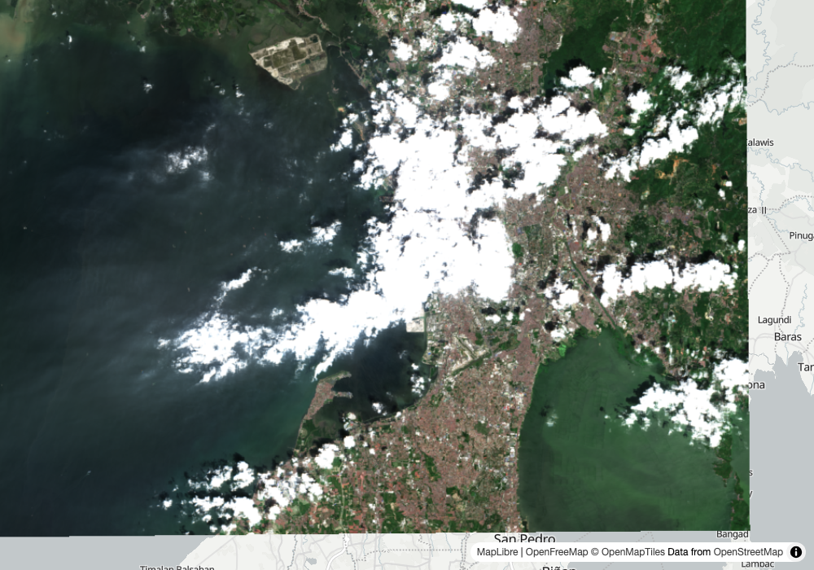
live artifact ↗full read
Our read
A 96-scene Sentinel-2 archive for Metro Manila (2026-07-25 to 2026-10-23) was written to one parquet file, and the search ran with the network cut: the live control failed with Connection refused while the archive returned five scenes. The recommended scene is S2A_51PTS_20261015_0_L2A (2026-10-15, 7.7% cloud, covers 95.3% of the box), drawn from the live catalog after the network came back. Caveats: the result says the archive is a snapshot and "newer scenes may exist"; a cloud cap cannot be set when writing (write_archive takes no max_cloud_cover), so all 96 scenes are in the file and the 20% cap was applied at search time.show the data
geocode("Metro Manila, Philippines")
Metro Manila, Philippines bbox=[120.7917034, 14.3472554, 121.1350232, 14.7853355] source=nominatim
write_archive("earth-search", ["sentinel-2-l2a"], bbox=[120.7917034, 14.3472554, 121.1350232, 14.7853355], datetime_range="2026-07-25T00:00:00Z/2026-10-25T23:59:59Z", out_path="/tmp/ft12/out/manila-s2.parquet")
path: /tmp/ft12/out/manila-s2.parquet
count: 96
datetime_range: ['2026-07-25T02:33:38.930000Z', '2026-10-23T02:33:53.223000Z']
written: 2026-10-25
[write_archive takes no max_cloud_cover argument, so the 40% cap could not be applied here]
HTTPS_PROXY=http://127.0.0.1:9 HTTP_PROXY=http://127.0.0.1:9 (nothing listens on port 9)
control, live call under the dead proxy:
search_imagery("earth-search", ["sentinel-2-l2a"], bbox=, max_cloud_cover=20, limit=1)
ConnectError: [Errno 61] Connection refused
search_imagery("/tmp/ft12/out/manila-s2.parquet", ["sentinel-2-l2a"], bbox=, max_cloud_cover=20, limit=5) same dead proxy
count: 5
archive: {"href": "/tmp/ft12/out/manila-s2.parquet", "written": "2026-10-26", "datetime_range": ["2026-07-25T02:33:38.930Z", "2026-10-23T02:33:53.223Z"], "note": "a snapshot of the catalog as of the written date, not the live catalog: newer scenes may exist. Analysis of these items (preview_item, compute_statistics, render_map) goes through the live catalog: call them with catalog 'earth-search' and the item id."}
S2A_50PRA_20261015_0_L2A 2026-10-15T02:34:04.740Z cloud 3.943327 covers 0.6
S2A_51PTR_20261015_0_L2A 2026-10-15T02:34:02.976Z cloud 16.369289 covers 27.2
S2A_50PRB_20261015_0_L2A 2026-10-15T02:33:50.094Z cloud 3.548303 covers 6.8
S2A_51PTS_20261015_0_L2A 2026-10-15T02:33:48.383Z cloud 7.688193 covers 95.3
S2A_50PRA_20260925_0_L2A 2026-09-25T02:34:07.204Z cloud 3.12718 covers 0.6
recommended: {"id": "S2A_51PTS_20261015_0_L2A", "covers_aoi_pct": 95.3, "cloud_cover": 7.688193, "reason": "7.7% cloud but covers 95.3% of the area; the clearest scene (3.1% cloud) covers 0.6%"}
full_coverage_set: date 2026-10-15, union_covers_aoi_pct 100.0
[per-item assets lists omitted; the set's items carry catalog "/tmp/ft12/out/manila-s2.parquet"]
network back on
render_map("Metro Manila, Sentinel-2 scene of 2026-10-15 (from the archive)", bbox=, [item layer: earth-search / sentinel-2-l2a / S2A_51PTS_20261015_0_L2A, assets ["visual"]], stack_facts={"geocoded": "nominatim"})
/tmp/ft12/out/map-metro-manila--sentinel-2-scene-of-2026-10-15--from-the-archi.html layers: ['Sentinel-2 true colour, 2026-10-15']
Learning → The archive keeps every cloud level. write_archive has no cloud filter, so a cloud-capped archive is a promise the search has to keep later, and the file also holds scenes you will never use. The oddity from №11 is back: write_archive says written 2026-10-25 and the search says 2026-10-26. Also the full_coverage_set items name the parquet path as their catalog, so passing that set straight to render_map would point at a file the tiler cannot read; I drew the one recommended id from earth-search by hand.
write_archive geoparquet snapshot · search_imagery on an archive under a dead proxy with a failing live control · recommended and full_coverage_set from an archive · live render from an archived id
13
night postcard
climate educator
Input
Make me a postcard of the Nile delta at night.
Our read
There is no Black Marble scene of the Nile delta: VEDA's monthly Black Marble collection says it covers it, but search returned 0 items for the delta (its extent is an envelope and ends…
Learning → The collection named in the brief did not have the scene.
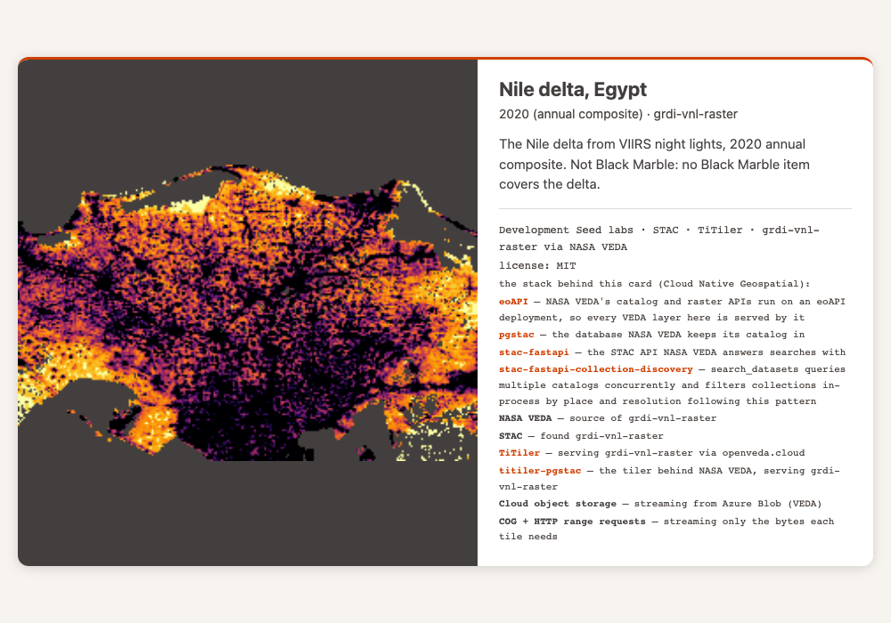
live artifact ↗full read
Our read
There is no Black Marble scene of the Nile delta: VEDA's monthly Black Marble collection says it covers it, but search returned 0 items for the delta (its extent is an envelope and ends 2022-03-31), and the two other Black Marble collections tried have extents elsewhere. The postcard I made is a 2020 annual VIIRS night-lights composite (GRDI VNL), a night-lights raster that does cover the delta, and the caption says it is not Black Marble. Caveats: it is a 2020 annual image, not a recent night; the tool declares no resolution, and the frame is small.show the data
search_datasets("nightlights", catalog="veda", bbox=[30.0, 30.2, 32.3, 31.6])
1 hit: nightlights-hd-monthly covers_aoi=True
search_datasets("black marble", bbox=[30.0, 30.2, 32.3, 31.6])
1 hit: veda nightlights-hd-monthly covers_aoi=True
search_datasets("viirs", bbox=) veda grdi-vnl-raster, grdi-vnl-slope-raster, planetary-computer hrea, all covers_aoi=True
describe_collection("veda", "nightlights-hd-monthly")
extent.spatial.bbox: [[-122.63569641113281, -37.08, 174.96, 54.584515]] temporal: 2019-01-01 to 2022-03-31
search_imagery("veda", ["nightlights-hd-monthly"], bbox=[30.0, 30.2, 32.3, 31.6], limit=3)
count: 0 items: []
search_imagery("veda", ["nightlights-hd-1band"], bbox=, limit=3) count: 0 (extent: [-90.3, 17.9, -65.6, 30.1], 2017-07-21 to 2021-08-31)
search_imagery("veda", ["delta-disasters-hd-blackmarble-nightlights"], bbox=, limit=3) count: 0 (extent: [-90.96, 32.83, -90.79, 32.97], Mississippi delta, 2023-03)
fallback, VIIRS night lights that do cover the delta:
search_imagery("veda", ["grdi-vnl-raster"], bbox=, limit=3)
count: 1 povmap-grdi-v1_VNL_2020-01-01_2020-12-31 2020-01-01 covers 100.0
compute_statistics("veda", "grdi-vnl-raster", "povmap-grdi-v1_VNL_2020-01-01_2020-12-31", bbox=, assets=["cog_default"])
cog_default_b1: min -0.0 max 100.0 mean 36.22919183221821 percentile_2 -0.0 percentile_98 100.0 valid_percent 71.73
render_postcard("veda", "grdi-vnl-raster", "povmap-grdi-v1_VNL_2020-01-01_2020-12-31", "Nile delta, Egypt", "2020 (annual composite)", assets=["cog_default"], rescale="0,100", colormap_name="inferno", bbox=[30.0, 30.2, 32.3, 31.6], caption="The Nile delta from VIIRS night lights, 2020 annual composite. Not Black Marble: no Black Marble item covers the delta.")
/tmp/ft12/out/postcard-nile-delta--egypt-2020--annual-composite.html
[the first postcard used rescale 0,75, which clips the 98th percentile; it was redone at 0,100. The delta bbox is my own, not a geocode result, so no geocoded fact is claimed. Image looked at once: delta shape visible, small frame.]
Learning → The collection named in the brief did not have the scene. The brief assumed a Black Marble collection that covers the delta; describe_collection confirmed an envelope that does, and search_imagery then found nothing. I only learned that because I searched items; describe_collection alone would have said yes. The postcard tool then worked fine on the fallback, but I had to pick the rescale from statistics (98th percentile of 100) because the first guess clipped.
search_datasets with bbox filter · describe_collection extent versus real items · VEDA render_postcard with bbox framing and colormap · static Stack credit block on a postcard
14
landsat cloud
agriculture analyst
Input
Which Landsat scenes cover Ludhiana with under 10% cloud this month, and show me the best one.
Our read
One Landsat scene covers Ludhiana under 10% cloud this month: LC08_L2SP_148039_20261006_02_T1 (2026-10-06, 0.04% cloud, covers 100% of the area), and it is the recommended one with the…
Learning → The cloud filter hid the newer scenes.
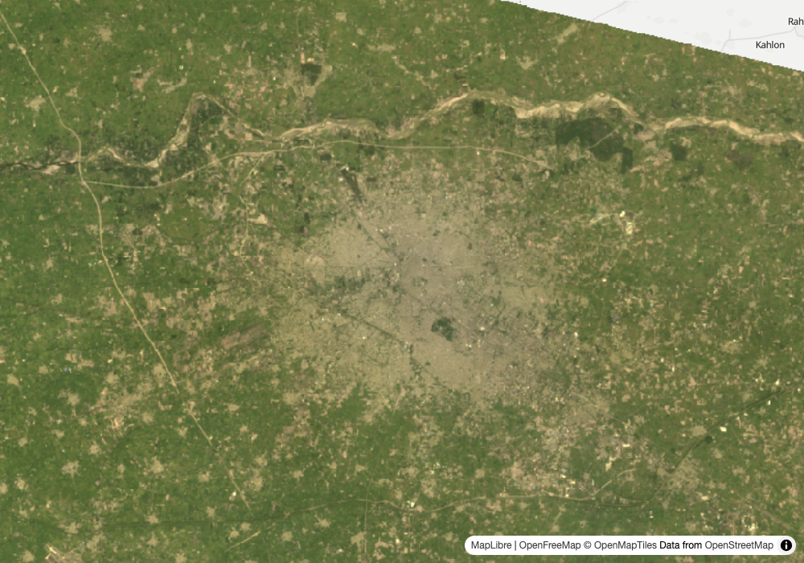
live artifact ↗full read
Our read
One Landsat scene covers Ludhiana under 10% cloud this month: LC08_L2SP_148039_20261006_02_T1 (2026-10-06, 0.04% cloud, covers 100% of the area), and it is the recommended one with the reason "clearest (0.0% cloud) and best-covering (100.0% of the area), not a tradeoff". The map shows it in true colour from the red, green and blue bands. Caveats: the other 7 October scenes are 12% to 86% cloud (2026-10-06 to 10-23), and the newest, 2026-10-23, is 12% to 14%; the true-colour stretch (7000 to 15000) is my pick from the scene's statistics, not a tool default.show the data
describe_collection("planetary-computer", "landsat-c2-l2")
assets include: red, green, blue (band ids "red" "green" "blue"), nir08, swir16, swir22, coastal, lwir11, qa_pixel [full list and description omitted]
search_imagery("planetary-computer", ["landsat-c2-l2"], place="Ludhiana, Punjab, India", datetime_range="2026-10-01T00:00:00Z/2026-10-25T23:59:59Z", max_cloud_cover=10, limit=10)
bbox: [75.691601, 30.7490157, 76.011601, 31.0690157] (geocode source=nominatim)
count: 1
LC08_L2SP_148039_20261006_02_T1 2026-10-06T05:30:51.040051Z cloud 0.04 covers 100.0
recommended: {"id": "LC08_L2SP_148039_20261006_02_T1", "covers_aoi_pct": 100.0, "cloud_cover": 0.04, "reason": "clearest (0.0% cloud) and best-covering (100.0% of the area), not a tradeoff"}
[per-item assets list omitted]
control, same search with no cloud filter: count 8
147039 on 2026-10-23 cloud 13.56 | 147038 on 2026-10-23 cloud 12.05 | 148039 on 2026-10-14 cloud 19.63 | 148038 on 2026-10-14 cloud 26.46 | 147039 on 2026-10-07 cloud 28.33 | 147038 on 2026-10-07 cloud 85.85 | 148039 on 2026-10-06 cloud 0.04 | 148038 on 2026-10-06 cloud 17.12
[path/row and date shown; sensor prefix and the rest of each id omitted]
compute_statistics("planetary-computer", "landsat-c2-l2", "LC08_L2SP_148039_20261006_02_T1", bbox=, assets=["red","green","blue"])
red_b1 percentile_2 9529.0 percentile_98 12644.0 | green_b1 9975.0 / 12149.0 | blue_b1 8632.0 / 10697.0
render_map("Ludhiana, Landsat 8 true colour of 2026-10-06", bbox=, [item layer: planetary-computer / landsat-c2-l2 / LC08_L2SP_148039_20261006_02_T1, assets ["red","green","blue"], rescale "7000,15000"], stack_facts={"geocoded": "nominatim"})
/tmp/ft12/out/map-ludhiana--landsat-8-true-colour-of-2026-10-06.html layers: ['Landsat true colour, 2026-10-06']
[one tile fetched at z=10 over Ludhiana: HTTP 200, RGBA PNG, 146 KB, RGB values 58 to 255]
Learning → The cloud filter hid the newer scenes. A cap of 10% leaves one scene from 19 days ago, while the 2026-10-23 pass sits at 12 to 14% and would be the choice for a field visit. I only knew that by running the unfiltered control. Also, Landsat on Planetary Computer needs a hand-set rescale: the bands' 2nd to 98th percentiles run 8632 to 12644, so a 0 to 255 style stretch would draw black.
Planetary Computer Landsat C2 L2 · recommended with reason · band ids from describe_collection · true-colour map from three assets with a rescale
15
land cover legend
geographer
Input
Land cover around the shores of Lake Victoria, with a legend.
Our read
The land-cover map draws in class colours, but it has no legend: the shores of Lake Victoria are shown from ESA WorldCover 2021 (2021-01-01, 10 m) with the esa-worldcover colormap, so water…
Learning → "With a legend" cannot be done.
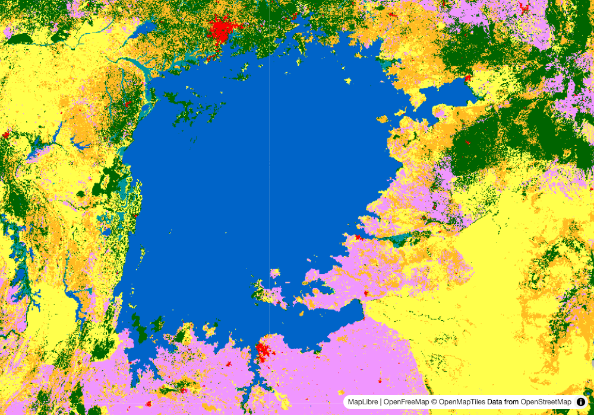
live artifact ↗full read
Our read
The land-cover map draws in class colours, but it has no legend: the shores of Lake Victoria are shown from ESA WorldCover 2021 (2021-01-01, 10 m) with the esa-worldcover colormap, so water is blue and land is in pinks and oranges. The colormap works: the same tile without it is a grayscale image of class codes (values 10 to 90), with it a four-channel colour image. Caveats: nothing on the page says what a colour means, so you cannot yet answer a reader who asks what pink is; the bbox is my own box around the lake, and the map has six layers all with the same name.show the data
search_imagery("planetary-computer", ["esa-worldcover"], bbox=[31.6, -3.1, 34.9, 0.6], datetime_range="2021-01-01T00:00:00Z/2021-12-31T23:59:59Z", limit=10)
count: 6 tiles S06E033 S06E030 S03E033 S03E030 N00E033 N00E030, all 2021-01-01
full_coverage_set: date 2021-01-01, union_covers_aoi_pct 100.0
[per-item rows and assets omitted; bbox is my own, not a geocode result]
tile_url_template("planetary-computer", "esa-worldcover", "ESA_WorldCover_10m_2021_v200_S03E033", assets=["map"], colormap_name="esa-worldcover")
https://planetarycomputer.microsoft.com/api/data/v1/mosaic/1ea3affc30b3405fdb6150f3a3eb6b3e/tiles/WebMercatorQuad/{z}/{x}/{y}@1x.png?collection=esa-worldcover&assets=map&colormap_name=esa-worldcover
tile_url_template(... same, no colormap_name)
...&collection=esa-worldcover&assets=map
render_map("Lake Victoria shores, ESA WorldCover 2021", bbox=[31.6, -3.1, 34.9, 0.6], [coverage_set layer, assets ["map"], colormap_name "esa-worldcover"])
/tmp/ft12/out/map-lake-victoria-shores--esa-worldcover-2021.html layers: ['WorldCover 2021 · WorldCover' x 6]
[no stack_facts: I did not geocode this place]
one tile at z=9 over the Speke Gulf shore (lat -1.9, lon 33.6):
with colormap_name=esa-worldcover: HTTP 200, image/png, 10264 bytes, mode RGBA (blue water, pink and orange land)
without colormap_name: HTTP 200, image/png, 7656 bytes, mode LA (grayscale plus alpha), gray values 10 to 90
map HTML: the word "legend" does not appear, and neither do the class names "tree cover" or "cropland" [grep over the file; the map was not opened in a browser]
Learning → "With a legend" cannot be done. tile_url_template and render_map accept a colormap_name and draw the colours, but the map HTML has no legend (grepped, not opened in a browser), and nothing in the tool result lists the classes. I would have to hand-write the WorldCover class table from memory, which I did not do. Smaller: the six layers in the toggle are all called 'WorldCover 2021 · WorldCover', so a reader cannot tell which tile is which.
categorical colormap (esa-worldcover) on tile_url_template and a coverage_set layer · Planetary Computer WorldCover · tile colour type check (RGBA versus LA) · missing legend
Round 4 — passes, briefs and stacks
16
polar pass
a field team lead
Input
When does Sentinel-2 next pass over Longyearbyen, and is it worth it this time of year?
Our read
Sentinel-2 passes Longyearbyen next at 2026-10-26 12:29 UTC (Sentinel-2C), and it is almost certainly not worth it for optical imagery.
Learning → The pass predictor lists optical passes it should know are dark.
full read
Our read
Sentinel-2 passes Longyearbyen next at 2026-10-26 12:29 UTC (Sentinel-2C), and it is almost certainly not worth it for optical imagery. The catalog's newest Sentinel-2 scene is 2026-10-09 at 96.9% cloud, nothing newer exists in the last 30 days, and the best look in that window is 2026-09-25 at 21.2% cloud, a month old. My own sun-angle estimate (not a tool output) puts the sun at about -1.6 degrees at the 2026-10-26 pass and -2.1 degrees at the 2026-10-28 12:19 pass, so the predicted passes fall at the start of polar night where there is little or no light to image. If you need a look now, radar is the answer: Sentinel-1A passes 2026-10-26 07:49 UTC and sees through cloud and dark. Caveats: a pass is a possible capture from swath geometry, not the acquisition plan, and imagery lands in the catalogs hours to a day later.show the data
geocode("Longyearbyen, Svalbard") -> 78.2231558, 15.6463656 source: nominatim
next_pass(78.2231558, 15.6463656, days=3)
constellations_source: developmentseed/eo-predictor (49 passes in all, all open constellations)
SENTINEL-2C 2026-10-26 12:29 track 34.8 km optical
SENTINEL-2B 2026-10-27 12:49 track 67.8 km optical
SENTINEL-2A 2026-10-27 12:59 track 108.8 km optical
SENTINEL-2B 2026-10-28 12:19 track 77.2 km optical
SENTINEL-2A 2026-10-28 12:29 track 83.8 km optical
SENTINEL-2C 2026-10-28 13:09 track 138.9 km optical
LANDSAT 9 2026-10-26 12:17 track 56.3 km optical
SENTINEL-1A 2026-10-26 07:49 radar (day or night, sees through cloud)
[Sentinel-1, Sentinel-3, NISAR and other Landsat rows omitted]
note: "swath geometry from live TLEs, not the acquisition plan - a pass is a possible capture ..."
search_imagery("earth-search", ["sentinel-2-l2a"], place="Longyearbyen, Svalbard", datetime_range="2026-09-25T00:00:00Z/2026-10-25T23:59:59Z", limit=50)
count: 34 recommended: S2C_33XWG_20260925_0_L2A (21.2% cloud, covers 96.8%)
newest first (cloud %, covers_aoi_pct):
S2A_33XWG_20261009 2026-10-09T11:59 96.9% 51.0
S2A_33XWG_20261005 2026-10-05T12:19 73.7% 96.8
S2A_33XWG_20261004 2026-10-04T12:49 64.7% 96.8
S2A_33XWG_20261002 2026-10-02T12:09 96.4% 96.8
S2A_33XWG_20261001 2026-10-01T12:39 69.3% 96.8
S2C_33XWG_20260930 2026-09-30T12:09 31.7% 96.8
S2C_33XWG_20260925 2026-09-25T12:59 21.2% 96.8
[27 more rows omitted: Sentinel-2 tiles 33XWG and 33XWH, 2026-09-25 to 2026-10-09; none newer than 2026-10-09]
not tool output (my own arithmetic, NOAA solar-position formula): sun elevation at the scene times, 78.22 N 15.65 E: 2026-10-05 12:19Z +6.4 deg, 2026-10-09 11:59Z +5.2 deg, 2026-10-26 12:29Z -1.6 deg, 2026-10-28 12:19Z -2.1 deg
Learning → The pass predictor lists optical passes it should know are dark. next_pass keeps Sentinel-2 rows at 12:29 UTC over 78 N as the sun sets for the season, and the result has no field saying the sun is below the horizon, so I computed sun elevation myself to say the passes were useless. Also, two next_pass calls minutes apart gave different track distances for the same passes, and the first run listed a Sentinel-2C row the second did not (only the second run is in the block above); I did not find the cause.
eo-predictor passes at 78 N, catalog vs predictor honesty, no artifact because no real scene draws (newest scene 96.9% cloud)
17
morning brief
the mayor's office in Asheville
Input
Morning brief for Asheville, North Carolina: weather, anything happening, latest imagery
Our read
The brief calls Asheville CALM, and this time both hazard feeds answered: EONET listed no open events in 30 days and GDACS had none inside the area.
Learning → The date on the brief is not Asheville's date.
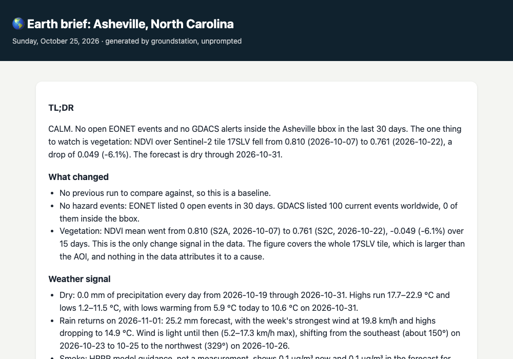
live artifact ↗full read
Our read
The brief calls Asheville CALM, and this time both hazard feeds answered: EONET listed no open events in 30 days and GDACS had none inside the area. It is dry (no rain on any day from 2026-10-19 through 2026-10-31, highs 17.7 to 22.9 C), with 25.2 mm of rain forecast for 2026-11-01, and model smoke is 0.1 ug/m3 now and for 2026-10-27 05:00 UTC, both clear (NOAA HRRR guidance, not a measurement). The latest imagery is a Sentinel-2 scene from 2026-10-22 at essentially 0% cloud covering all of the area; a 2026-10-24 scene is 22.2% cloud. The one flagged change, NDVI 0.81 (2026-10-07) to 0.76 (2026-10-22), is a whole-tile mean (tile 17SLV), not the city, and conditions_brief says it is not a risk model.show the data
uv run briefing/brief.py --place "Asheville, North Carolina" --days 7 --out /tmp/ft12/r4/brief
[5/5] synthesizing brief with Claude... (35 s wall, no source failed, no timeout)
brief: brief-asheville--north-carolina-2026-10-25.html map: brief-map-asheville--north-carolina-2026-10-25.html (also .md and .data.json)
page states:
TL;DR: "CALM. No open EONET events and no GDACS alerts inside the Asheville bbox in the last 30 days. The one thing to watch is vegetation: NDVI over Sentinel-2 tile 17SLV fell from 0.810 (2026-10-07) to 0.761 (2026-10-22), a drop of 0.049 (-6.1%). The forecast is dry through 2026-10-31."
Events (data.json): eonet_note "EONET listed 0 open events in 30 days"; gdacs_note "GDACS current-events feed listed 100; 0 active within 30 days inside the bbox"
Weather: "0.0 mm of precipitation every day from 2026-10-19 through 2026-10-31. Highs run 17.7-22.9 C and lows 1.2-11.5 C"
"Rain returns on 2026-11-01: 25.2 mm forecast"
Smoke: "HRRR model guidance, not a measurement, shows 0.1 ug/m3 now and 0.1 ug/m3 in the forecast for 2026-10-27 05:00Z. Both are clear (under 5). These readings are for a 3 km grid cell at 674 m elevation, so the valley may differ."
Fresh eyes: S2C_17SLV_20261022 2026-10-22 0.00065% cloud 100% AOI coverage
S2A_17SLV_20261024 2026-10-24 22.2% cloud 100% AOI coverage
Vegetation: "The figure covers the whole 17SLV tile, which is larger than the AOI, and nothing in the data attributes it to a cause."
Next pass: no section on the page
[Suggested next steps omitted]
conditions_brief(place="Asheville, North Carolina")
dryness: total_precipitation 0.0, days_since_last_rain null, days_back 14
wind today: 13.8 km/h, 329 deg, "from the NW" tomorrow: 13.3 km/h, 129 deg, "from the SE"
events: eonet [], gdacs [], same two notes as above
latest_look: S2C_17SLV_20261022_0_L2A 2026-10-22 cloud 0.00065 covers_aoi_pct 100.0
next_looks: SENTINEL-3A 2026-10-26 16:01 optical (track 140.0 km); SENTINEL-1A 2026-10-27 12:00 radar (143.2 km); SENTINEL-3A 2026-10-27 15:35 optical (440.7 km)
signals: "no rain >=1mm in the last 14 days" | "peak wind today 14 km/h from the NW" | "no active events within ~150 km"
note: "current conditions from live sources - not a risk model, not a prediction"
[days array and summary string omitted]
Learning → The date on the brief is not Asheville's date. The file is stamped 2026-10-25 from this machine's clock, but the UTC date had already rolled to 2026-10-26 during these runs, and neither output names the date it calls "today", so conditions_brief's "today" wind (329 deg, from the NW) may be a day later than the file name. Also, the brief still reports NDVI over the whole tile ("The figure covers the whole 17SLV tile"), though compare_dates now clips to the place.
briefing page with sources, conditions_brief beside it, both hazard feeds checked and none failed, page copied with its map relinked
18
volcano 3d
a volcano observatory
Input
Etna in 3D with the latest thermal view
Our read
Etna is draped in a Sentinel-2 SWIR composite (swir22, nir, red) from the 2026-10-23 scene, 1.7% cloud, covering 93% of the view, at 1.5x exaggeration.
Learning → The first drape rendered pure white and the tool said nothing.
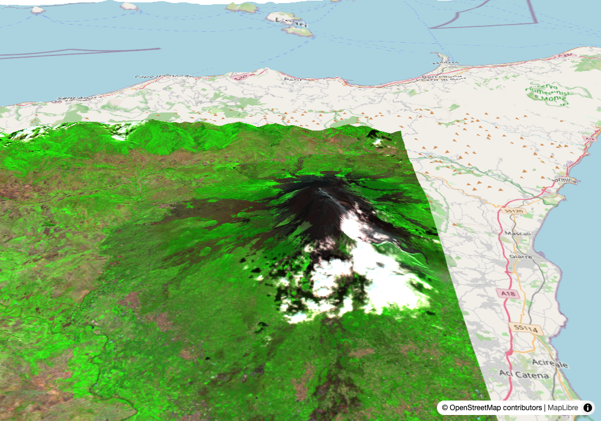
live artifact ↗full read
Our read
Etna is draped in a Sentinel-2 SWIR composite (swir22, nir, red) from the 2026-10-23 scene, 1.7% cloud, covering 93% of the view, at 1.5x exaggeration. The newest scene, 2026-10-25, is 22.6% cloud and covers only 4% of the area, so it was not used. This is not a thermal view: Sentinel-2 has no thermal band, so the composite can only show very hot ground glowing in the shortwave infrared, and I did not open the page to see whether any does. Caveat: the rest of the view (about 7%) renders as terrain with no imagery, per the tool's coverage note.show the data
geocode("Mount Etna, Sicily") -> "Parco dell'Etna, Catania, Sicilia, 95052, Italia" 37.7476765, 14.9661442 bbox [14.8223805, 37.6185794, 15.132806, 37.8768383] source: nominatim
search_imagery("earth-search", ["sentinel-2-l2a"], bbox=[14.8223805, 37.6185794, 15.132806, 37.8768383], datetime_range="2026-08-25T00:00:00Z/2026-10-25T23:59:59Z", max_cloud_cover=30, limit=8)
recommended: S2B_33SVB_20261023_0_L2A "1.7% cloud but covers 93.0% of the area; the clearest scene (0.0% cloud) covers 3.7%"
S2C_33SWC_20261025 2026-10-25T09:50 22.6% cloud covers 4.0
S2B_33SVB_20261023 2026-10-23T10:00 1.7% cloud covers 93.0
S2B_33SVC_20261023 2026-10-23T10:00 18.2% cloud covers 8.3
S2C_33SVB_20261015 2026-10-15T09:50 0.0% cloud covers 93.0
[4 more rows omitted: 2026-10-18 and 2026-10-15 tiles]
render_map_3d(layer={item S2B_33SVB_20261023_0_L2A, assets ["swir22","nir","red"], rescale "0,0.5"}, exaggeration=1.5, stack_facts={"geocoded": "nominatim"})
path: /tmp/ft12/r4/etna3d.html coverage_pct: 93.0
coverage_note: "the drape covers 93% of the view, the rest renders as terrain with no imagery ..."
check, one tile fetched from titiler.xyz at z11 near the summit: 863 bytes, 2 colors, all white [tool returned no warning]
render_map_3d(same, rescale "0,4000")
tile check, same z11 tile: 144187 bytes, 42685 colors
page check: id="stack-toggle" present; panel names Terrarium terrain and Nominatim
Learning → The first drape rendered pure white and the tool said nothing. I used rescale "0,0.5" as for reflectance; earth-search Sentinel-2 comes through the tiler as raw numbers in the thousands, so every pixel saturated. A tile fetch showed 863 bytes and two colors; "0,4000" gave 42,685 colors. render_map_3d returned a clean result both times, so only fetching a tile caught it. I checked the tile, not the finished page in a browser.
3D drape with a false-colour SWIR composite, Stack panel with the geocoder named, coverage note on a 93% scene
19
flood swipe
a journalist
Input
Show the before and after of the Dubai April 2024 floods as a swipe, with the tech stack visible
Our read
The swipe compares Dubai on 2024-04-07 against 2024-04-27, and the area-mean NDWI is lower after (0.04) than before (0.10), a change of -0.06, so the mean does not show standing water.
Learning → compare_dates rejects stack_facts.
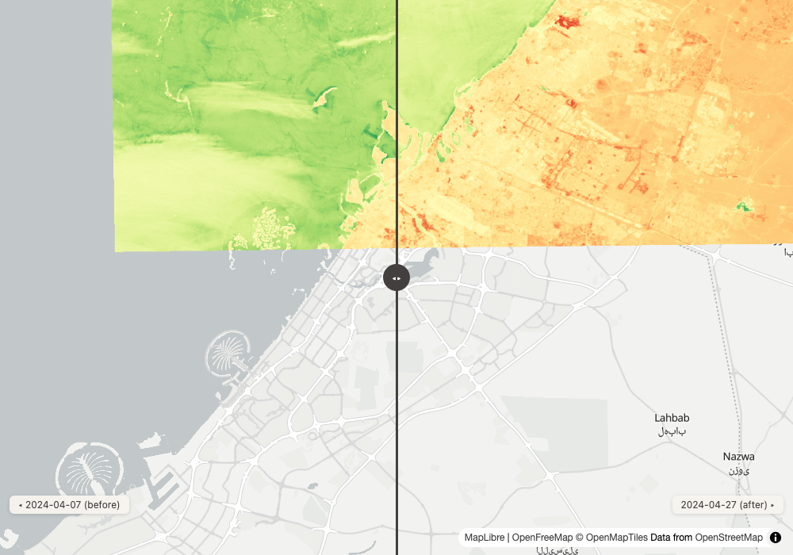
live artifact ↗full read
Our read
The swipe compares Dubai on 2024-04-07 against 2024-04-27, and the area-mean NDWI is lower after (0.04) than before (0.10), a change of -0.06, so the mean does not show standing water. The after scene is the only low-cloud pass in the window: 2024-04-17 was 20.7% cloud, just over the 20% limit, and 2024-04-22 was 48.3%. The scene tile (40RCP) covers about 45% of the Dubai box, and the mean is clipped to that box. Caveat, from the tool: the baseline is near zero, so the -59.8% is unstable and the delta is what to trust. The artifact's Stack toggle (id="stack-toggle") is in the page and names Gazet as the geocoder.show the data
geocode("Dubai") -> bbox [55.03047291744394, 24.93011660379285, 55.583020371348475, 25.451036414434718] source: gazet
compare_dates(place="Dubai", window_before="2024-04-01T00:00:00Z/2024-04-14T23:59:59Z", window_after="2024-04-17T00:00:00Z/2024-04-30T23:59:59Z", expression="(green-nir)/(green+nir)", max_cloud_cover=20, label="Dubai floods April 2024 NDWI")
tile: 40RCP
before: S2A_40RCP_20240407_0_L2A 2024-04-07 cloud 7.11431 mean 0.0999
after: S2A_40RCP_20240427_0_L2A 2024-04-27 cloud 4.419713 mean 0.0402
delta: -0.0597 delta_pct: -59.8
clipped_to: [55.03047291744394, 24.93011660379285, 55.583020371348475, 25.451036414434718]
caveat: ["delta_pct is unstable: the baseline mean (0.0999) is near zero, so a small absolute change reads as a large percentage. Trust delta over delta_pct."]
map_path: /tmp/ft12/out/map-dubai-floods-april-2024-ndwi---2024-04-27-vs-2024-04-07.html
compare_dates(..., stack_facts={"geocoded": "gazet"})
TypeError: compare_dates() got an unexpected keyword argument 'stack_facts'. Did you mean 'stack_layer'?
artifact check: id="stack-toggle" present (1 match); panel lists Gazet, Natural Earth, Overture Maps, Earth Search, STAC, TiTiler, MapLibre GL ...
search_imagery over the same bbox, 2024-04-15 to 2024-04-30 (tile 40RCP rows; cloud %, covers_aoi_pct): 2024-04-17 S2A 20.7 / 45.3; 2024-04-22 S2B 48.3 / 45.3; 2024-04-27 S2A 4.4 / 45.3
[other tiles omitted]
Learning → compare_dates rejects stack_facts. The brief said to pass stack_facts with the geocode source, and the call raised a TypeError because only render_map and render_map_3d take it; compare_dates geocodes itself and puts Gazet or Nominatim in the panel on its own. The plain call produced the toggle and the right geocoder, so nothing was lost, but the skill text reads as if the argument applies. And the swipe's answer is the opposite of what the question implies, so the story is in the pixels, not the mean.
compare_dates swipe with the Stack toggle by default, geocoder named in the panel, instability caveat quoted
20
shoreline
a coastal engineer
Input
Shoreline change at Cape Hatteras over the last 5 years
Our read
Six Octobers of Sentinel-2 true colour (2021-10-24, 2022-10-19, 2023-10-29, 2024-10-28, 2025-10-23, 2026-10-23, every one under 1.5% cloud and covering the whole box) are in the timelapse,…
Learning → The recommended scene is just an id, so "first item" can be the wrong tile.
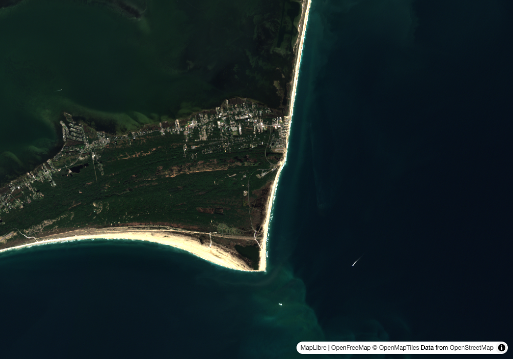
timelapse: 6 frames, press play ↗full read
Our read
Six Octobers of Sentinel-2 true colour (2021-10-24, 2022-10-19, 2023-10-29, 2024-10-28, 2025-10-23, 2026-10-23, every one under 1.5% cloud and covering the whole box) are in the timelapse, and the box-mean NDWI fell from 0.45 (2021-10-24) to 0.35 (2026-10-23), a change of -0.10, which is a direction, not a shoreline position. Step through the frames to look at the island edge directly; I used my own 9 km box on the cape, not round 4's 33 km one. A 10 m index averaged over a box mixes open water, sound, wet sand and vegetation, so tide, turbidity or sand moisture can move it as much as land does, and I looked up no tide stage for any scene time. Six frames are one scene a year, not a trend: they cannot say whether a lower value is erosion, a different tide, or a storm week.show the data
# bbox: my own box, about 9 km by 11 km on the cape itself; round 4's box was 33 km wide ([-75.678, 35.075, -75.378, 35.375])
search_imagery("earth-search", ["sentinel-2-l2a"], bbox=[-75.58, 35.2, -75.48, 35.3], datetime_range="2021-10-01T00:00:00Z/2021-10-31T23:59:59Z", max_cloud_cover=20, limit=10)
items: 8 [per-item fields omitted]
recommended: id S2B_18SVE_20211024_1_L2A covers_aoi_pct 100.0 cloud_cover 0.004496
reason: "clearest (0.0% cloud) and best-covering (100.0% of the area), not a tradeoff"
search_imagery("earth-search", ["sentinel-2-l2a"], bbox=[-75.58, 35.2, -75.48, 35.3], datetime_range="2022-10-01T00:00:00Z/2022-10-31T23:59:59Z", max_cloud_cover=20, limit=10)
items: 5 [per-item fields omitted]
recommended: id S2B_18SVE_20221019_0_L2A covers_aoi_pct 100.0 cloud_cover 0.076906
reason: "clearest (0.1% cloud) and best-covering (100.0% of the area), not a tradeoff"
search_imagery("earth-search", ["sentinel-2-l2a"], bbox=[-75.58, 35.2, -75.48, 35.3], datetime_range="2023-10-01T00:00:00Z/2023-10-31T23:59:59Z", max_cloud_cover=20, limit=10)
items: 6 [per-item fields omitted]
recommended: id S2A_18SVE_20231029_0_L2A covers_aoi_pct 100.0 cloud_cover 0.004963
reason: "clearest (0.0% cloud) and best-covering (100.0% of the area), not a tradeoff"
search_imagery("earth-search", ["sentinel-2-l2a"], bbox=[-75.58, 35.2, -75.48, 35.3], datetime_range="2024-10-01T00:00:00Z/2024-10-31T23:59:59Z", max_cloud_cover=20, limit=10)
items: 9 [per-item fields omitted]
recommended: id S2B_18SVE_20241028_0_L2A covers_aoi_pct 100.0 cloud_cover 0.07496
reason: "clearest (0.1% cloud) and best-covering (100.0% of the area), not a tradeoff"
search_imagery("earth-search", ["sentinel-2-l2a"], bbox=[-75.58, 35.2, -75.48, 35.3], datetime_range="2025-10-01T00:00:00Z/2025-10-31T23:59:59Z", max_cloud_cover=20, limit=10)
items: 4 [per-item fields omitted]
recommended: id S2B_18SVE_20251023_0_L2A covers_aoi_pct 100.0 cloud_cover 0.005086
reason: "0.0% cloud but covers 100.0% of the area; the clearest scene (0.0% cloud) covers 43.0%"
search_imagery("earth-search", ["sentinel-2-l2a"], bbox=[-75.58, 35.2, -75.48, 35.3], datetime_range="2026-10-01T00:00:00Z/2026-10-25T23:59:59Z", max_cloud_cover=20, limit=10)
items: 5 [per-item fields omitted]
recommended: id S2C_18SVE_20261023_0_L2A covers_aoi_pct 100.0 cloud_cover 1.429096
reason: "1.4% cloud but covers 100.0% of the area; the clearest scene (0.2% cloud) covers 43.0%"
[item layers: type item, catalog earth-search, collection_id sentinel-2-l2a, assets ["visual"], name = scene date; no bbox passed, so each layer re-fetches its STAC item]
render_timelapse(title="Cape Hatteras, one October a year, 2021 to 2026", bbox=[-75.58, 35.2, -75.48, 35.3], frames=<6 layers>, subtitle="Sentinel-2 true colour · one frame a year · drag nothing, press play")
map_path: /tmp/ft12/out/timelapse-cape-hatteras--one-october-a-year--2021-to-2026.html
frames: 6
state.layers: 2021-10-24, 2022-10-19, 2023-10-29, 2024-10-28, 2025-10-23, 2026-10-23 [tile URLs omitted]
compute_statistics("earth-search", "sentinel-2-l2a", "S2B_18SVE_20211024_1_L2A", expression="(green-nir)/(green+nir)", bbox=[-75.58, 35.2, -75.48, 35.3])
b1: min -0.8328 max 0.9606 mean 0.454601928883348 std 0.5790 median 0.7379 valid_percent 100.0
clipped_to: [-75.58, 35.2, -75.48, 35.3] [percentiles, band_scaling omitted]
compute_statistics("earth-search", "sentinel-2-l2a", "S2C_18SVE_20261023_0_L2A", expression="(green-nir)/(green+nir)", bbox=[-75.58, 35.2, -75.48, 35.3])
b1: min -0.8393 max 0.8346 mean 0.35489948134893184 std 0.5352 median 0.6496 valid_percent 100.0
clipped_to: [-75.58, 35.2, -75.48, 35.3] [percentiles, band_scaling omitted]
artifact check (headless): frame 1 "2021-10-24 (1/6)", 20 tile requests all 200; #tl-next -> "2022-10-19 (2/6)", 20 more tile requests all 200
not run: Stack panel contents, play/prev controls, tide lookup, shoreline extraction, frames 3 to 6 tile loads
Learning → The recommended scene is just an id, so "first item" can be the wrong tile. `recommended` returns the id, coverage, cloud and reason only. My first pass looked the item up by a key the dict does not have and took the first item in the list, which in 2021 was tile 18SVD at 7.7% cloud, not the recommended 18SVE at 0.0%. Building the layer from the recommended id fixed it; the layer needs no bbox, but then each frame re-fetches its STAC item.
the timelapse renderer: 6 frames, one per October 2021 to 2026, tiles loading per frame, prev / play / next controls, and the Stack panel
Reproduce
git clone https://github.com/dannybauman/groundstation && cd groundstation
bash scripts/doctor.sh # walks the setup chain, prints the fix
uv run evals/unit_checks.py # 137 offline checks
uv run scripts/field_test.py docs/field-test-2026-10-25-no12.cases.json # renders this page and its stills